BCS Question Bank — Manual Verification (10th–50th)
Generated from reports & memory.md — only questions needing human check (image-only / option-images / defective blanks) + recently fixed questions. Images shown from images/<exam>/ if present. Correct answer letter highlighted.
10th BCS — 1989-01-01 / সুরমা (100 Qs, manual 0, fixed 3)
Recently fixed (for context)
Q27 • English Language & Literature fixed
What is the synonym of ‘Jovial’?
A. Jolly
B. Gay
C. Jealous
D. Happy
Solve: Jovial = Jolly (A) — হাসিখুশি, আমুদে। Gay/Happyও সমার্থক কিন্তু পরীক্ষার নিকটতম Jolly।
Q55 • International Affairs fixed
পিএলও-এর সদর দপ্তর–
A. তিউনিস
B. রাবাত
C. বেনগাজি
D. মরক্কো
Solve: PLO সদর দপ্তর 1982-1991 তিউনিস (A) — লেবানন থেকে বহিষ্কারের পর; বর্তমান রামাল্লা (1994-)।
Q59 • International Affairs fixed
বর্তমান জাতিসংঘের সদস্য সংখ্যা–
A. ১৫৬
B. ১৫৭
C. ১৫৮
D. ১৮৮
Solve: 1989-এ জাতিসংঘ সদস্য 158–159 (C) — 1984 Brunei 159তম, 1990 Namibia 160তম; পরীক্ষার বিকল্পে 158 (C) নিকটতম; বর্তমান 193 (দক্ষিণ সুদান 2011)।
11st BCS — 1991-10-17 / পদ্মা (100 Qs, manual 1, fixed 2)
Needs manual verification
Q78 • Mathematical Reasoning (গাণিতিক যুক্তি) question image image-only question
A. 0
B. 1
C. 225
D. 1/225
Q image: images/11st_bcs/q78_img1.jpg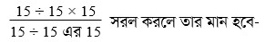
Solve: (15 ÷ 15 × 15)/(15 ÷ 15 এর 15 = (1×15)/(15÷225)=15×=225)
correct_answer: C
Recently fixed (for context)
Q37 • Bangladesh Affairs fixed
কোন জেলা তুলা চাষের জন্য সবচেয়ে বেশি উপযোগী?
A. রাজশাহী
B. ফরিদপুর
C. রংপুর
D. যশোর
Solve: 1991-এ তুলা চাষে সবচেয়ে উপযোগী জেলা যশোর (D) — বৃহত্তর যশোর/ঝিনাইদহ অঞ্চল; বর্তমান 2019-এ শীর্ষ ঝিনাইদহ (যশোর অঞ্চল) — html solve আধুনিক।
Q46 • Bangladesh Affairs fixed
বাংলাদেশের মোট আবাদয্যেগ্য জমির পরিমাণ প্রায় কত?
A. ২ কোটি ৪০ লক্ষ একর
B. ২ কোটি ৫০ লক্ষ একর
C. ২ কোটি একর
D. ২ কোটি ২৫ লক্ষ একর
Solve: 1991-এ মোট আবাদযোগ্য জমি ~2 কোটি 40 লক্ষ একর (A) — 9.7m ha; বর্তমান BARI 88.29 lakh ha (~2.18 cr acre) — html solve আধুনিক হেক্টরে।
12nd BCS — 1991-01-01 / সুরমা (100 Qs, manual 0, fixed 5)
Recently fixed (for context)
Q39 • Bangladesh Affairs fixed
কিওক্রাডং-এর উচ্চতা প্রায়-
A. ১০১০ মিটার
B. ১৫৩০ মিটার
C. ১২৩২ মিটার
D. ১৩৬৪ মিটার
Solve: পাঠ্যবইয়ে কিওক্রাডং 1,232 মিটার (C) — 1,230m textbook board। আধুনিক GPS/Bangladesh Survey 2020-এ 986m, দেশের সর্বোচ্চ এখন Saka Haphong 1,063m — html solve আধুনিক আংশিক। পরীক্ষার সময় উত্তর C।
Q40 • Bangladesh Affairs fixed
বাংলাদেশে বার্ষিক চা উৎপাদনের পরিমাণ হচ্ছে প্রায়-
A. ১৪ কোটি পাউন্ড
B. ১৩ কোটি পাউন্ড
C. ১০.৫ কোটি পাউন্ড
D. ৯.৫ কোটি পাউন্ড
Solve: 1991-এ বার্ষিক চা উৎপাদন ~10.5 কোটি পাউন্ড (C) — 1 kg = 2.204 lb; বর্তমান 10.42 কোটি কেজি (~23 কোটি পাউন্ড) — html solve কেজিতে, আধুনিক।
Q41 • Bangladesh Affairs fixed
ঢাকা মেট্রোপলিটন এলাকার আয়তন প্রায়-
A. ১০০ বর্গমাইল
B. ৯০ বর্গমাইল
C. ১৬০ বর্গমাইল
D. ৮০ বর্গমাইল
Solve: 1991-এ ঢাকা মেট্রোপলিটন এলাকা (DMP) ~90 বর্গমাইল (B) — বর্তমান ঢাকা দুই সিটি কর্পোরেশন মিলে ~130+ বর্গমাইল; html solve দুই সিটি নিয়ে, আধুনিক।
Q58 • International Affairs fixed
জাতিসংঘে রাষ্ট্রপতির ভাষণ অনুযায়ী বাংলাদেশে শিশুমৃত্যুর হার কমিয়ে আনা হয়েছে প্রতি হাজারে–
A. ১৩৭
B. ১২১
C. ১১৭
D. ১১০
Solve: রাষ্ট্রপতির জাতিসংঘ ভাষণে শিশুমৃত্যু 117/1000 (C) — EPI/UNICEF অগ্রগতি দাবি; বর্তমান 2022-এ 21/1000 — html solve আধুনিক।
Q65 • International Affairs fixed
কঙ্গো প্রজাতন্ত্রের বর্তমান নাম–
A. লিওপোন্ডভিল
B. জিম্বাবুয়ে
C. জিবুতি
D. জায়ারে
Solve: 1991-এ কঙ্গো প্রজাতন্ত্রের নাম জায়ারে (Zaire, 1971–1997, Mobutu)। 1960–64 Republic of Congo, 1964–71 Democratic Republic, 1997-এ পুনরায় DRC। উত্তর D।
13rd BCS — 1992-01-01 / চামেলী (100 Qs, manual 0, fixed 4)
Recently fixed (for context)
Q1 • International Affairs fixed
১৯৯১ সালের Business International- এর সমীক্ষায় জীবনযাত্রার ব্যয়ভার (Living cost) সবচেয়ে বেশি-
A. টোকিওতে
B. নিউইয়র্কে
C. তেহরানে
D. আবিদজানে
Solve: Business International 1991 Living cost survey-এ সবচেয়ে ব্যয়বহুল শহর টোকিও (A)। জাপানের বাবল-অর্থনীতির কারণে 1987–1995 টোকিও টানা শীর্ষে ছিল। আধুনিক EIU 2022-এ যৌথ শীর্ষ নিউইয়র্ক/সিঙ্গাপুর — html solve আধুনিক।
Q3 • International Affairs fixed
আঞ্চলিক ভিত্তিতে জীবন প্রত্যাশা Life expectancy সবচেয়ে বেশি-
A. ইউরোপে
B. উত্তর আমেরিকায়
C. অস্ট্রেলিয়া ও নিউজিল্যান্ডে
D. মধ্য এশিয়ায়
Solve: 1991 UNDP HDR আঞ্চলিক গড় আয়ুতে অস্ট্রেলিয়া-নিউজিল্যান্ড (C) সর্বোচ্চ (~76 বছর), ইউরোপ ~74, উত্তর আমেরিকা ~75। বর্তমান 2022-এ শীর্ষ হংকং 85.5 — html solve আধুনিক। **DISPUTED**: আঞ্চলিক গড়ের সঠিক তুলনা পদ্ধতিভেদে ইউরোপকেও উত্তর হিসেবে দেখানো হতো।
Q66 • Bangladesh Affairs fixed
বাংলাদেশে ডিগ্রিপ্রাপ্ত চিকিৎসক প্রতি জনসংখ্যা কত?
A. প্রায় ৪৭৯৭ জন
B. প্রায় ৪৫৭২ জন
C. প্রায় ৯৭৯১ জন
D. প্রায় ৮২১২ জন
Solve: 1991-এ ডিগ্রিপ্রাপ্ত চিকিৎসক প্রতি জনসংখ্যা ~4,797 (A)। বর্তমান 2023-এ রেজিস্টার্ড চিকিৎসক প্রতি 1,496 — html solve আধুনিক।
Q70 • Bangladesh Affairs fixed
সুন্দরবনের আয়তন প্রায় কত বর্গ কিলোমিটার?
A. ৩৮০০ বর্গ কিলোমিটার
B. ৪১০০ বর্গ কিলোমিটার
C. ৫৮০০ বর্গ কিলোমিটার
D. ৬৯০০ বর্গ কিলোমিটার
Solve: সুন্দরবনের বাংলাদেশ অংশ ~6,017 বর্গ কিমি (62% of total ~10,000); পশ্চিমবঙ্গসহ total ~10,000। পরীক্ষার বিকল্পে 5,800 (C) নিকটতম; D 6,900-ও কাছাকাছি। আধুনিক বন অধিদপ্তর 6,017 ব্যবহার করে — **DISPUTED** (C নিকটতম)।
14th BCS — 1992-01-01 / পদ্ম (100 Qs, manual 0, fixed 3)
Recently fixed (for context)
Q17 • International Affairs fixed
কমনওয়েলথের কোন দেশটি যুক্তরাজ্যের রাজা ও রানীকে তাদের রাষ্ট্রপ্রধান হিসেবে স্বীকার করে?
A. অস্ট্রেলিয়া
B. কানাডা
C. সাইপ্রাস
D. মরিসাস
Solve: 17টি Commonwealth realm ব্রিটেনের রাজা/রানিকে প্রতীকী রাষ্ট্রপ্রধান মানে (1992-এ) — অপশনে কানাডা (B) ও অস্ট্রেলিয়া (A) উভয়ই realm, সাইপ্রাস প্রজাতন্ত্র, মরিশাস 12 Mar 1992-এ প্রজাতন্ত্র হয়। পাঠ্যবইয়ে কানাডা ক্লাসিক উদাহরণ — তাই প্রত্যাশিত উত্তর কানাডা (B), তবে A-ও সঠিক — DISPUTED (দুটি সঠিক)।
Q19 • International Affairs fixed
রাজীব গান্ধীকে হত্যার জন্য বোমা বহনকারী আত্মঘাতী মহিলার নাম কি?
A. নলিনী
B. নাথু
C. থানু
D. আনু
Solve: আত্মঘাতী বোমা বহনকারী তামিল নারী Thenmozhi Rajaratnam ওরফে Dhanu/Thanu (C); Jain Commission 'Gayatri' নামেও উল্লেখ করে; Nalini (A) সহযোগী, কারাবন্দী। হত্যা 21 May 1991 শ্রীপেরুমবুদুরে। উত্তর C।
Q87 • Bangladesh Affairs fixed
নিচের কোন বাংলাদেশীয় উপজাতির পারিবারিক কাঠামো পিতৃতান্ত্রিক?
A. গারো
B. সাঁওতাল
C. খাসিয়া
D. মারমা
Solve: খাসিয়া ও গারো মাতৃতান্ত্রিক, বাকি 48টি পিতৃতান্ত্রিক — অপশনে সাঁওতাল (B) ও মারমা (D) উভয়ই পিতৃতান্ত্রিক, তাই দুটি সঠিক; পাঠ্যবইয়ে সাঁওতাল আদর্শ উদাহরণ — তাই প্রত্যাশিত উত্তর সাঁওতাল (B) — DISPUTED।
15th BCS — 1993-01-01 / শাপলা (100 Qs, manual 0, fixed 7)
Recently fixed (for context)
Q4 • International Affairs fixed
The World Economic Forum কর্তৃক নির্ধারিত International Competitiveness Ranking –এ ১৯৯৩ সালে কোন দেশ সর্বোচ্চ স্থান অধিকার করেছে?
A. যুক্তরাষ্ট্র
B. জাপান
C. জার্মানি
D. দক্ষিণ কোরিয়া
Solve: 1993 WEF Global Competitiveness Report-এ জাপান শীর্ষ (1st), যুক্তরাষ্ট্র 2nd — IHT 22 Jun 1993: '1993 report put US second after Japan'. 1994-এ যুক্তরাষ্ট্র জাপানকে অতিক্রম করে শীর্ষ হয় (NYT 7 Sep 1994)। তাই 1993 প্রশ্নে উত্তর জাপান (B)। আধুনিক WEF 2020-তে সিঙ্গাপুর শীর্ষ — html source solve-note আধুনিক।
Q14 • Bangladesh Affairs fixed
নিম্নের কোন আন্তর্জাতিক সংস্থার সদর দপ্তর বাংলাদেশে অবস্থিত?
A. IJO
B. APEC
C. SAARC
D. ADB
Solve: International Jute Organization (IJO)-এর সদর দপ্তর ঢাকায় ছিল (প্রতিষ্ঠা 1984)। IJO বিলুপ্ত হয়ে 2020-এ International Jute Study Group (IJSG) ঢাকায় স্থাপিত। অন্য বিকল্প: APEC সিঙ্গাপুর, SAARC কাঠমান্ডু, ADB ম্যানিলা। উত্তর A।
Q39 • Bangladesh Affairs fixed
বাংলাদেশের GDP –তে কৃষিখাতের অবদান কত শতাংশ?
Solve: 1993-এ কৃষিখাতের GDP অবদান ~30–32% (WDI 1990 30.5%, 1993 ~30%); বর্তমান 11–12% (WDI 2022 11.2%)। তাই পরীক্ষার সময় উত্তর 32% (C)। solve-note-এর 11.50% আধুনিক।
Q89 • Bangladesh Affairs fixed
বাংলাদেশের মোট রপ্তানি আয়ে রেডিমেড গার্মেন্টস-এর অংশ কত?
A. ৭৫%
B. ৫৬%
C. ৩৫%
D. ৬০%
Solve: 1992-93 অর্থবছরে RMG রপ্তানি আয়ের ~52–56% (EPB: 1990-91 36% → 1992-93 52% → 1993-94 56%); তৈরি পোশাক তখন থেকেই শীর্ষ রপ্তানি। বর্তমান 2022-23 ~84% (IPCC 46,991m)। পরীক্ষার প্রত্যাশিত উত্তর 56% (B)।
Q90 • Bangladesh Affairs fixed
বাংলাদেশ জাতীয় সংসদের নির্ধারিত আসনে মহিলা সদস্যের সংখ্যা কত?
Solve: প্রথম সংসদে 15, 1979-এর 5ম সংশোধনীতে 30 (1979–2001), 15th Amendment 2011-এ 50। 1993-এ কার্যকর ছিল 30 (মোট 330)। তাই উত্তর 30 (A)।
Q98 • Bangladesh Affairs fixed
বাংলাদেশের সরকারি মেডিকেল কলেজের সংখ্যা কত?
Solve: 1993-এ সরকারি মেডিকেল কলেজ 8টি (ঢাকা, স্যার সলিমুল্লাহ, ময়মনসিংহ, চট্টগ্রাম, রাজশাহী, MAG ওসমানী, শের-ই-বাংলা, রংপুর)। বর্তমান 38 (36 MBBS + অন্যান্য)। উত্তর A।
Q100 • Bangladesh Affairs fixed
২০০০ সাল নাগাল বাংলাদেশের জনসংখ্যা দাঁড়াবে-
A. ২০০ মিলিয়ন
B. ১২০ মিলিয়ন
C. ১০০ মিলিয়ন
D. ২৩০ মিলিয়ন
Solve: 1993-এর প্রক্ষেপণে 2000 সালে জনসংখ্যা ~120 মিলিয়ন (B) ধরা হয়েছিল; প্রকৃত 2000 আদমশুমারি ~129.2m, 2001 ~130m — B নিকটতম। অন্য বিকল্প 200m/230m অবাস্তব।
16th BCS — 1994-01-01 / শাপলা (100 Qs, manual 0, fixed 1)
Recently fixed (for context)
Q35 • International Affairs fixed
জর্ডান ও ইসরাইলের মধ্যে ৪৬ বছরের যুদ্ধাবস্থার আনুষ্ঠানিক অবসানের লক্ষ্যে কবে জর্ডানের বাদশাহ হোসেন এবং ইসরাইলের প্রধানমন্ত্রী ইসহাক রবিন একটি ঐতিহাসিক ঘোষণায় স্বাক্ষর করেন?
A. ২৪ জুলাই, ১৯৯৪
B. ২৫ জুলাই, ১৯৯৪
C. ২৬ জুলাই, ১৯৯৪
D. ২৭ জুলাই, ১৯৯৪
Solve: জর্ডান-ইসরাইল Washington Declaration স্বাক্ষরিত হয় 25 July 1994 হোয়াইট হাউসে — বাদশাহ হোসেন ও প্রধানমন্ত্রী ইসহাক রাবিন কর্তৃক (মার্কিন প্রেসিডেন্ট ক্লিনটন সাক্ষী)। 46 বছরের যুদ্ধাবস্থার আনুষ্ঠানিক অবসানের ঘোষণা; পূর্ণ শান্তিচুক্তি (Arava) 26 Oct 1994 আকাবায়। পরীক্ষার বিকল্পে 25 July (B) সঠিক; solve-note-এ ভুলভাবে 26 Oct treaty-কে declaration হিসেবে লেখা ছিল — সংশোধিত।
17th BCS — 1995-01-01 / পদ্ম (70 Qs, manual 0, fixed 2)
Recently fixed (for context)
Q38 • International Affairs fixed
নিচের যে দেশটি জাতিসংঘের সদস্য নয়-
A. নামিবিয়া
B. সুইজারল্যান্ড
C. কিউবা
D. পানামা
Solve: পরীক্ষার সময় (1995) সুইজারল্যান্ড জাতিসংঘের সদস্য ছিল না — যোগদান 10 Sep 2002, 190তম সদস্য। তাই উত্তর সুইজারল্যান্ড (B)। নামিবিয়া 23 Apr 1990, কিউবা ও পানামা 1945-এ সদস্য।
Q64 • International Affairs fixed
ওপেকভুক্ত একমাত্র অ-আরব এশীয় দেশ-
A. ইন্দোনেশিয়া
B. মালয়েশিয়া
C. থাইল্যান্ড
D. ফিলিপাইন
Solve: প্রশ্নটি প্রণয়নের সময় (1995) ইন্দোনেশিয়া OPEC-ভুক্ত অ-আরব এশীয় দেশ হিসেবে পড়ানো হতো — তাই প্রত্যাশিত উত্তর ইন্দোনেশিয়া (A)। প্রকৃতপক্ষে 1995-এ ইরানও অ-আরব এশীয় সদস্য ছিল (দুটি দেশ), এবং ইন্দোনেশিয়া 2009/2016-এ সদস্যতা স্থগিত/ত্যাগ করে; বর্তমানে OPEC-এ অ-আরব সদস্য একাধিক (ইরান, নাইজেরিয়া, ভেনেজুয়েলা ইত্যাদি)। প্রশ্নটি ত্রুটিপূর্ণ/অতিসরলীকৃত — DISPUTED।
18th BCS — 1996-10-10 / দোয়েল (100 Qs, manual 0, fixed 2)
Recently fixed (for context)
Q45 • Bangladesh Affairs fixed
মুক্তিযুদ্ধ জাদুঘর ঢাকার কোন এলাকায় অবস্থিত?
A. সেগুনবাগিচা
B. ধানমণ্ডি
C. মগবাজার
D. বনানী
Solve: মুক্তিযুদ্ধ জাদুঘর প্রতিষ্ঠিত হয় ২২ মার্চ ১৯৯৬, প্রতিষ্ঠাকালীন অবস্থান ঢাকার সেগুনবাগিচা। পরীক্ষা ১০ অক্টোবর ১৯৯৬ — তাই উত্তর সেগুনবাগিচা (A)। সরকার ২০০৮ সালে আগারগাঁওয়ে ২.৫ বিঘা জমি বরাদ্দ দেয় এবং ১৬ এপ্রিল ২০১৭ নিজস্ব ভবন উদ্বোধন হয়।
Q51 • Bangladesh Affairs fixed
বাংলাদেশের কোন দেশ থেকে সবচেয়ে বেশি সরাসরি বৈদেশিক বিনিয়োগ (Direct Foreign Investment) হয়েছে?
A. জাপান
B. যুক্তরাজ্য
C. দক্ষিণ কোরিয়া
D. মালয়েশিয়া
Solve: প্রশ্নপত্র প্রণয়নের সময় (১৯৯৬) চট্টগ্রামে কোরিয়ান ইপিজেডে প্রচুর কোরিয়ান বিনিয়োগ হয় এবং তখন দক্ষিণ কোরিয়া ছিল বাংলাদেশে সর্বাধিক সরাসরি বিদেশি বিনিয়োগকারী দেশ (C)। বিশ্ব বিনিয়োগ রিপোর্ট ২০২২ অনুযায়ী বর্তমানে শীর্ষ দেশ যুক্তরাষ্ট্র — প্রশ্নটি কাল-নির্ভর।
19th BCS — 1998-12-11 / শাপলা (50 Qs, manual 3, fixed 5)
Needs manual verification
Q41 • Bangladesh Affairs (বাংলাদেশ বিষয়াবলি) blank answer (defective) recently fixed
বাংলাদেশে জিডিপিতে প্রাণিসম্পদে অবদান কত?
A. ২%
B. ১০%
C. ৬.৫%
D. ১৫%
Solve: অর্থনৈতিক সমীক্ষা ২০২৩ অনুযায়ী জিডিপিতে প্রাণিসম্পদের অবদান ১.৮৫% (সাম্প্রতিক ১.৪৭–২%); ১৯৯৮-এর সমীক্ষায়ও কৃষি ~৩২% এবং প্রাণিসম্পদ তার ভগ্নাংশ ছিল — প্রদত্ত অপশন ২%/১০%/৬.৫%/১৫% কোনোটিই ১৯৯৮ বা বর্তমান বাস্তবতার সাথে মেলে না। অপশনগুলো ত্রুটিপূর্ণ/হালনাগাদ নয় — DEFECTIVE, উত্তর ফাঁকা রাখা হলো।
correct_answer:
Q42 • Bangladesh Affairs (বাংলাদেশ বিষয়াবলি) blank answer (defective) recently fixed
বার্তমানে বিদেশ থেকে কত টাকার গুড়োদুধ আমদানি করা হয়?
A. ৫০০ কোটি টাকা
B. ৪০০ কোটি টাকা
C. ৩০০ কোটি টাকা
D. ১২৫ কোটি টাকা
Solve: মিল্ক ভিটার তথ্যে বর্তমানে বাংলাদেশ প্রতি বছর ~২৫০০ কোটি টাকার গুঁড়ো দুধ আমদানি করে; বাংলাদেশ ব্যাংক ২০২২-২৩-এ দুধ ও দুগ্ধজাত আমদানি ~৪০০০ কোটি টাকা হিসাবে দেখায়। ১৯৯৮-এর প্রশ্নের অপশন ৫০০/৪০০/৩০০/১২৫ কোটি টাকা বর্তমান বা নির্ভরযোগ্য ঐতিহাসিক উৎসে যাচাইযোগ্য নয় — DEFECTIVE, উত্তর ফাঁকা।
correct_answer:
Q45 • Bangladesh Affairs (বাংলাদেশ বিষয়াবলি) blank answer (defective) recently fixed
রপ্তানি আয়ে বর্তমানে প্রাণিসম্পদের অবদান কত?
A. ৮ ভাগ
B. ১০ ভাগ
C. ১২ ভাগ
D. ১৩ ভাগ
Solve: ইপিবির সর্বশেষ রিপোর্টে রপ্তানি আয়ে প্রাণিসম্পদ (চামড়া, চামড়াজাত ও জুতা) অবদান ২.৩৯%; ১৯৯০-এর দশকেও তা কখনো ৮–১৩ 'ভাগ' (শতাংশ) ছিল না। অপশনগুলো বাস্তবতা বহির্ভূত — DEFECTIVE, উত্তর ফাঁকা।
correct_answer:
Recently fixed (for context)
Q27 • Geography, Environment & Disaster Management fixed
বাংলাদেশের বনাঞ্চলের পরিমাণ মোট ভূমির কত শতাংশ?
A. ১৯ শতাংশ
B. ১২ শতাংশ
C. ১৬ শতাংশ
D. ৯ শতাংশ
Solve: পরিবেশ বিশেষজ্ঞদের মতে ভারসাম্য রক্ষায় মোট ভূমির ২৫% বনভূমি প্রয়োজন (প্রশ্ন ১২)। ১৯৯৮ সালে পাঠ্যবই/পরীক্ষার সময় বাংলাদেশে বনভূমির পরিমাণ ১৬% হিসেবে পড়ানো হতো — তাই অপশন C (১৬%) পরীক্ষার প্রত্যাশিত উত্তর। বর্তমান সরকারি হিসাব ১৭.০৮–১৭.৬২% (বন অধিদপ্তর) এবং FAO হিসাব ~১৪.৮% (১৯৯৮) → ~১১–১৪.৫% (সাম্প্রতিক); অপশনগুলো পুরনো। biddabari/bdquestionbank-এর আধুনিক সংস্করণে অপশন D-কে ১৩–১৭% দিয়ে সংশোধন করা হয়েছে, যা মূল ১৯৯৮ অপশন (৯%)-এর সাথে মেলে না — DISPUTED।
Q29 • Bangladesh Affairs fixed
বাংলাদেশের নৌ-বাহিনীর প্রতীক কি?
A. বলাকা
B. শাপলা
C. নৌকা
D. রনতরী
Solve: বাংলাদেশ নৌবাহিনীর প্রতীক — কাছিবেষ্টিত নোঙর (fouled anchor) ও তার উপরে জাতীয় ফুল শাপলা। বিমান বাংলাদেশ এয়ারলাইন্সের প্রতীক উদীয়মান সূর্যের মধ্যে উড়ন্ত বলাকা। প্রদত্ত অপশনে 'কাছিবেষ্টিত নোঙর' পূর্ণরূপে না থাকায় নিকটতম প্রতীক হিসেবে শাপলা (B) নির্বাচিত — নোঙরের উপরের শাপলাই জাতীয় প্রতীকের কেন্দ্রীয় উপাদান।
Q31 • International Affairs fixed
কসোভো কোথায় অবস্থিত?
A. আলবেনিয়ায়
B. সার্বিয়ায়
C. রুমানিয়ায়
D. গ্রিসে
Solve: পরীক্ষার সময় (ডিসেম্বর ১৯৯৮) কসোভো ছিল যুগোস্লাভিয়া/সার্বিয়ার স্বায়ত্তশাসিত প্রদেশ। ১৭ ফেব্রুয়ারি ২০০৮ স্বাধীনতা ঘোষণা করে; বাংলাদেশ স্বীকৃতি দেয় ২৭ ফেব্রুয়ারি ২০১৭ (১১৪তম দেশ)। তাই ১৯৯৮-এর প্রেক্ষিতে উত্তর সার্বিয়ায় (B)।
Q32 • International Affairs fixed
গিল্ডার কোন দেশের মুদ্রার নাম?
A. নরওয়ে
B. নেদারল্যান্ড
C. রুমানিয়া
D. গ্রিস
Solve: নেদারল্যান্ডের সাবেক মুদ্রা গিল্ডার। ১ জানুয়ারি ১৯৯৯ ইউরো হিসাব মুদ্রা হিসেবে চালু হলেও গিল্ডার ২০০২ সালের ১ জুলাই পর্যন্ত প্রচলিত ছিল; এরপর ইউরো একক মুদ্রা হয়। উত্তর: নেদারল্যান্ড (B)।
Q33 • International Affairs fixed
নেপালের পার্লামেন্টের নাম কি?
A. সিনেট
B. পঞ্চায়েত
C. কংগ্রেস
D. মজলিস
Solve: ১৯৯৮ সালের পাঠ্যবইয়ে নেপালের পার্লামেন্টকে 'পঞ্চায়েত' বলা হতো — তাই পরীক্ষার প্রত্যাশিত উত্তর B। প্রকৃতপক্ষে পঞ্চায়েত ব্যবস্থা ১৯৯০ সালেই বিলুপ্ত হয়; ১৯৯০-এর সংবিধানে দ্বিকক্ষ বিশিষ্ট পার্লামেন্ট (প্রতিনিধি সভা + জাতীয় সভা) এবং ২০১৫-এর সংবিধানে Federal Parliament (House of Representatives + National Assembly) কার্যকর হয়। বর্তমান সঠিক নাম Federal Parliament, তাই প্রশ্নটি কালাতীতভাবে ত্রুটিপূর্ণ — DISPUTED।
20th BCS — 1998-12-11 / পদ্ম (100 Qs, manual 0, fixed 2)
Recently fixed (for context)
Q49 • Bangladesh Affairs fixed
বাংলাদেশের জাতীয় সংসদে সংরক্ষিত মহিলা আসনের সংখ্যা কত?
Solve: বাংলাদেশের প্রথম জাতীয় সংসদ থেকেই মহিলাদের জন্য আসন সংরক্ষণ করে রাখা হয়। সে সময় সংরক্ষিত আসন ছিল ১৫ টি। সংবিধানের চতুদর্শ সংশোধনীর মাধ্যমে ৪৫ এবং পঞ্চদশ সংশোধনীর মাধ্যমে বর্তমানে নারীদের সংরক্ষিত আসন সংখ্যা ৫০ করা হয়েছে। সপ্তদশ সংশোধনীর মাধ্যমে সংরক্ষিত আসন আরও ২৫ বছরের জন্য সংরক্ষণ করা হয়।
Q58 • Bangladesh Affairs fixed
মুক্তিযুদ্ধে বীরত্বপূর্ণ অবদানের জন্য কতজনকে বীরউত্তম খেতাবে ভূষিত করা হয়?
A. ৪২ জন
B. ৫৮ জন
C. ৬৮ জন
D. ৬২ জন
Solve: মুক্তিযুদ্ধে অবদানের জন্য ৪টি রাষ্ট্রীয় খেতাব প্রদান করা হয় ৬৭৬ জনকে। তার মধ্যে বীরশ্রেষ্ঠ ৭ জন, বীর উত্তম ৬৮ জন, বীর বিক্রম ১৭৫ জন, বীর প্রতীক ৪২৬ জন। উল্লেখ্য মোট বীর উত্তম ৬৯ জন। জুন, ২০২১ এ মুক্তিযুদ্ধ বিষয়ক মন্ত্রণালয় থেকে জারীকৃত প্রজ্ঞাপনে ১ জন বীর উত্তম, ১ জন বীর বিক্রম ও ২ জন বীর প্রতীক এর খেতাব বাতিল করা হয়েছে।
21st BCS — 1999-12-24 / সুরমা (100 Qs, manual 1, fixed 7)
Needs manual verification
Q21 • English Language & Literature (English Language & Literature) question image solve image image-only question
A. concerned careful
B. anxious nervous
C. enthusiastic halfhearted
D. devoted dedicated
Q image: images/21st_bcs/q21_img1.jpg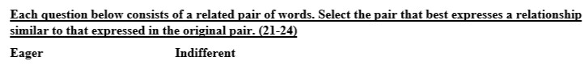
Solve image: images/21st_bcs/q21_img2.jpg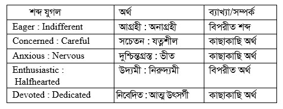
Solve is image-only (see solve image above)
correct_answer: C
Recently fixed (for context)
Q51 • Geography, Environment & Disaster Management fixed
বাংলাদেশ সিভিল সার্ভিসের (BCS) ক্যাডার কয়টি?
A. ২৯টি
B. ২২টি
C. ২১টি
D. ৫টি
Solve:
Q66 • Geography, Environment & Disaster Management fixed
বর্তমানে বাংলাদেশে গড়পড়তা মাথাপিছু আয় কত মার্কিন ডলার?
A. ২৪২ ডলার
B. ৩০০ ডলার
C. ২৮৯ ডলার
D. ৪০০ ডলার
Solve: অর্থনৈতিক সমীক্ষা রিভাইজড ২০২২ অনুযায়ী বাংলাদেশের মাথাপিছু আয় ২৭৯৩ মার্কিন ডলার।
Q69 • Bangladesh Affairs fixed
সার্কভূক্ত দেশের মধ্যে শিক্ষিতের হার সর্বাধিক কোন দেশে?
A. ভারতে
B. বাংলাদেশে
C. শ্রীলংকায়
D. নেপালে
Solve:
Q70 • International Affairs fixed
OPEC ভুক্ত দেশ কয়টি?
A. ১০টি
B. ১১টি
C. ৮টি
D. ১২টি
Solve: ১লা জানুয়ারি, ২০২৪ সালে এঙ্গোলা ওপেক থেকে বের হয়ে যায়। বর্তমানে ওপেকভুক্ত দেশ ১২টি।
Q75 • International Affairs fixed
ইন্দোনেশিয়ার নতুন রাষ্ট্রপতির নাম কি?
A. জেনারেল হাবিবি
B. মেঘবতী সুকর্ণপুত্রী
C. আবদুর রহমান ওয়াহিদ
D. জেনারেল বিরান্তো
Solve: ইন্দোনেশিয়ার বর্তমান রাষ্ট্রপতি জোকো উইদোদো ২০ অক্টোবর, ২০১৪ থেকে বর্তমান পর্যন্ত ক্ষমতাশীন। আবদুর রহমান ওয়াহিদ ছিলেন ইন্দোনেশিয়ার চতুর্থ প্রেসিডেন্ট, যার মেয়াদকাল ১৯ অক্টোবর, ১৯৯৯-২৩ জুলাই ২০০১। মুসলিম বিশ্বের প্রথম নারী প্রেসিডেন্ট ও ইন্দোনেশিয়ার পঞ্চম মেঘবতী সুকর্ণপুত্রী ক্ষমতাসীন ছিলেন ২৩ জুলাই, ২০০১-২১ অক্টোবর ২০০৪ পর্যন্ত। তিনি দেশটির প্রথম প্রেসিডেন্ট ড. আহমদ সুকর্ণের (মেয়াদকাল ১৮.০৮.১৯৪৫-১২.০৬.১৯৬৭) কন্যা।
Q76 • International Affairs fixed
সম্প্রতি কোন দেশকে কমনওয়েলথ থেকে বহিষ্কার করা হয়েছে?
A. নাইজেরিয়া
B. শ্রীলংকা
C. পাকিস্তান
D. ভারত
Solve:
Q90 • International Affairs fixed
কোন দেশে নারীরা পুরুষের চেয়ে কম সময় বাঁচে?
A. বাংলাদেশে
B. জাপানে
C. সুইডেনে
D. সিঙ্গাপুরে
Solve: ২১তম বিসিএস প্রিলিমিনারি পরীক্ষাটি অনুষ্ঠিত হয় ২০০০ সালে। ২০০১ সালের অর্থনৈতিক সমীক্ষা অনুযায়ী বাংলাদেশের প্রত্যাশিত গড় আয়ুষ্কাল ছিল ৬১.৮ বছর। এর মধ্যে পুরুষ ৬২.৯ ও নারী ৬১.২ বছর। কিন্তু ২০২২ সালের সমীক্ষার তথ্য মতে বাংলাদেশের প্রত্যাশিত গড় আয়ুষ্কাল ৭২.৮ বছর। এর মধ্যে পুরুষ ৭১.২ বছর এবং নারী ৭৪.৫। সুতরাং ২০০০ সালের প্রেক্ষাপটে সঠিক উত্তর বাংলাদেশ হলেও বর্তমানে বাংলাদেশেও নারীরা পুরুষের চেয়ে বেশি সময় বাঁচে।
22nd BCS — 2001-02-02 / চামেলী (100 Qs, manual 12, fixed 5)
Needs manual verification
Q23 • International Affairs (আন্তর্জাতিক বিষয়াবলি) blank answer (defective) recently fixed
রাশিয়ার কুরস্ক নামক সাবমেরিনটির ওজন কত টন?
A. ১২,৮০০ টন
B. ১৩,৯০০ টন
C. ১৪,২০০ টন
D. ১৫,০০০ টন
Solve: ২০০০ সালের ১২ আগস্ট উত্তর মেরুর নিকটবর্তী ব্যারেন্টস সাগরে রাশিয়ার পরমাণু শক্তিচালিত সাবমেরিন ‘কুরস্ক’ দুর্ঘটনার শিকার হয়। সাবমেরিনটির ওজন ছিল ২৪০০০ টন। ‘কুরস্ক’ ডুবে গেলে এর ১১৮ জন ক্রুর সকলেই মারা যান।
correct_answer:
Q61 • English Language & Literature (English Language & Literature) question image image-only question
A. Subjection … Liberation
B. Restrain …. Indulge
C. Compliant ….. Acquiescent
D. Restriction … Relaxation
Q image: images/22nd_bcs/q61_img1.jpg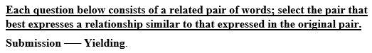
Solve: এখানে মূলশব্দ Submission অর্থ হলো আনুগত্য, নম্রতা, বশ্যতা আর Yielding অর্থ হলো নম্র, বিনয়ী। অন্যদিকে, Subjection পরাধীনতা, বশ্যতা, দমন ইত্যাদি। Liberation- মুক্তি, স্বাধীনতা। Restrain- দমন করা, নিয়ন্ত্রণ করা, বাঁধা প্রদান। Indulge-সাধ মিটানো, পরিতৃপ্ত করা; Compliant - রাজী, সম্মত। Acquiescent- সম্মতি, রাজী, মৌনসম্মতি। Restriction- বাঁধা, নিষেধ। Relaxation- প্রশমন , শ্লথ, কম কঠোরতাপূর্ণ। এখানে মূল জোড়ায় সম্পর্ক হলো যে ব্যক্তি Yielding (নম্র) তার মধ্যেই থাকে Submission (নম্রতা)। অনুরূপ উত্তর Compliant ….. Acquiescent তে দেখা যাচ্ছে, যার মধ্যে Acquiescent আছে সে-ই Compliant (সম্মত)।
correct_answer: C
Q62 • English Language & Literature (English Language & Literature) question image image-only question
A. Persevere … Waiver
B. Impulsive … Deliberate
C. Obstinate ... Accommodating
D. Irresolute … Indecisive
Q image: images/22nd_bcs/q62_img1.jpg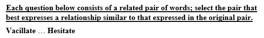
Solve: এখানে মূল শব্দ Vacillate অর্থ দ্বিধান্বিত হওয়া বা ইতস্তত করা এবং Hesitate অর্থও ইতস্তত করা, দ্বিধান্বিত হওয়া, সিদ্ধান্তহীনতায় ভোগা প্রভৃতি। অন্যদিকে Persevere- অধ্যবসায়ী হওয়া, নিরবিচ্ছিন্ন মনোযোগ সহকারে কাজ করা, Waiver- স্বত্বত্যাগ, দাবির পরিত্যাগ, না-দাবিকরণ প্রভৃতি। Impulsive- আবেগ তাড়িত, আবেগ প্রবৃত্ত, অন্তরাবেগ চালিত, Deliberate- সুচিন্তিত, ইচ্ছাকৃত, উদ্দেশ্য প্রণোদিত প্রভৃতি। Obstinate- একগুয়ে, জেদি, দুর্দমনীয়। Accommodating-অমায়িক, নম্র ,ভদ্র। Irresolute- অস্থির চিত্ত, অস্থির মতি, চলচিত্ত প্রভৃত্তি। Indecisive- অনিশ্চিত, অস্থিরমতি, দ্বিধান্বিত ইত্যাদি। ওপরের বিশ্লেষণে দেখা যায় Irresolute ... Indecisive বাদে কোনো জোড়াতেই Synonymous সম্পর্ক বুঝাচ্ছে না।
correct_answer: D
Q63 • English Language & Literature (English Language & Literature) question image image-only question
A. Affirm … Object
B. Reject … Disapprove
C. Acknowledge … Recognize
D. Endorse … Ratify
Q image: images/22nd_bcs/q63_img1.jpg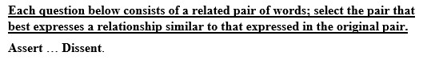
Solve: মূল শব্দ Assert অর্থ দাবি করা, দৃঢ়ভাবে ঘোষণা করা, এবং Dissent অর্থ আপত্তি করা, অনুমোদন করতে অস্বীকার করা। এ শব্দজোড়া পরস্পর বিপরীত অর্থ প্রকাশ করছে। ‘ক’ তে আছে- Affirm - দৃঢ়ভাবে ঘোষণা করা, নিশ্চিত রূপে বলা। Object - আপত্তি করা, অভিযোগ করা, অস্বীকার করা। ‘খ’ তে আছে Reject- বাতিল করা, প্রত্যাখ্যান করা, অগ্রাহ্য করা। Disapprove- প্রত্যাখ্যান করা, বাতিল করা, অনুমোদন না করা। ‘গ’ তে আছে- Acknowledge- স্বীকার করা, মেনে নেওয়া, প্রাপ্তি স্বীকার। Recognize- স্বীকৃতি দেওয়া, চিনতে পারা প্রভৃতি। ‘ঘ’ তে আছে-Endorse- অনুমোদন করা। Ratify- অনুমোদন করা ও দেয়া । ওপরের choice গুলোর শব্দ জোড়া বিশ্লেষণ করলে দেখা যায় মূল শব্দ জোড়ার সঙ্গে একমাত্র choice ‘ক’- এর শব্দ জোড়ারই মিল রয়েছে।
correct_answer: A
Q64 • English Language & Literature (English Language & Literature) question image image-only question
A. Straighten … Bend
B. Deform … Reform
C. Harmonize … Balance
D. Observe … Blur
Q image: images/22nd_bcs/q64_img1.jpg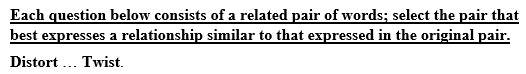
Solve: এখানে মূল শব্দ জোড়ার Distort অর্থ বিকৃত করা এবং Twist অর্থ মোচড়ানো, বিকৃত করা প্রভৃতি। অর্থাৎ শব্দ জোড়া পরস্পর সমার্থক অর্থ প্রকাশ করছে। আছে-Straighten - সোজা করা। Bend- বাকানো আছে-Deform- বিকৃতকরণ। Reform– সংশোধন। Harmonize- সমন্বয় সাধন করা, খাপ খাওয়া। Balance- সদৃশ করা, ভারসাম্য অবস্থান রাখা। Observe- পর্যবেক্ষণ করা, পালন করা, উদযাপন করা। Blur- দুর্বোধ্য, অস্পষ্ট, কলংক, দাগ। অপশন গুলোর মধ্যে শুধুমাত্র Harmonize … Balance. উত্তরের শব্দ জোড়াই পরস্পর সমার্থক অর্থ প্রকাশ করছে।
correct_answer: C
Q65 • English Language & Literature (English Language & Literature) question image image-only question
A. with
B. for
C. to
D. at
Q image: images/22nd_bcs/q65_img1.jpg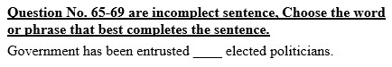
Solve: Entrusted with + something - কোনো কিছুতে আস্থা স্থাপন করা। Entrusted এর সাথে for, at – কখনোই বসে না। Entrusted to someone- কোনো ব্যক্তি বা ব্যক্তিবর্গকে বিশ্বাস করা; Entrusted with – দ্বারা কোন বস্তুতে বিশ্বাস স্থাপন করা বোঝায়। যেহেতু শূন্যস্থানের পরে elected politicians দ্বারা ব্যক্তিবর্গ নির্দেশ করছে। তাই এখানে entrusted to বসবে।
correct_answer: C
Q70 • English Language & Literature (English Language & Literature) question image image-only question
A. food
B. diet
C. outlook
D. figure
Q image: images/22nd_bcs/q70_img1.jpg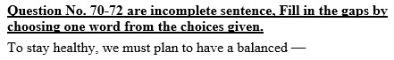
Solve: বাক্যে have অর্থ হলো খাওয়া। এক্ষেত্রে balanced food এবং balanced diet ব্যবহারের সম্ভবনা রয়েছে। Outlook (দৃশ্য) এবং figure (সংখ্যা) খাওয়া যায় না। সুতরাং diet এবং food - এর মধ্যে balanced food -এ জাতীয় phrase এর ব্যবহার তেমন দেখা যায় না। তাছাড়া food - এর আগে a বসানো যায় না, diet - এর আগে বসে।
correct_answer: B
Q71 • English Language & Literature (English Language & Literature) question image image-only question
A. raised
B. pointed
C. lifted
D. cressed (crossed)
Q image: images/22nd_bcs/q71_img1.jpg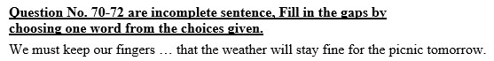
Solve: Keeping fingers raised, keeping fingers pointed or keeping fingers lifted এ জাতীয় phrase সচরাচার দেখা যায় না। কিন্তু keep one's fingers crossed (cressed) অর্থ হলো আশা পোষণ করা, কামনা করা। সুতরাং cressed (crossed).
correct_answer: D
Q72 • English Language & Literature (English Language & Literature) question image image-only question
A. pledged
B. disavowed
C. provided
D. defered
Q image: images/22nd_bcs/q72_img1.jpg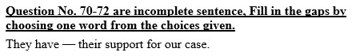
Solve: pledge- অঙ্গীকার করা, প্রতিজ্ঞা করা, জামানত রাখা। provide- সরবরাহ করা, সংস্থান করা। defere- বিলম্বিত করা, স্থগিত করা/মুলতবি করা। disavow- অস্বীকার করা। সুতরাং অর্থানুসারে pledged ই- most appropriate।
correct_answer: A
Q73 • English Language & Literature (English Language & Literature) question image image-only question
A. Selection
B. Dead end
C. Error
D. Bubble
Q image: images/22nd_bcs/q73_img1.jpg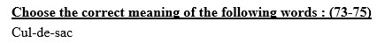
Solve: Cul-de-sac একটি ফরাসি শব্দ, যার অর্থ হলো কানাগলি। অন্যদিকে, Selection- নির্বাচন; Dead end- কানাগলি; Error- ভুল ; Bubble- বুদবুদ, অবাস্তব, চিন্তা বা পরিকল্পনা।
correct_answer: B
Q74 • English Language & Literature (English Language & Literature) question image image-only question
A. Quarrel
B. Postage
C. Piece of land
D. Unobstructed view
Q image: images/22nd_bcs/q74_img1.jpg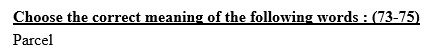
Solve: Parcel অর্থ হলো মোড়ক, এর আরেক অর্থ হলো এক খণ্ড জমি। Quarrel- ঝগড়া, বিবাদ, Piece of land- জমির টুকরো; Postage- ডাকমাশুল; Unobstructed view- বাধাহীন দৃষ্টি।
correct_answer: B
Q75 • English Language & Literature (English Language & Literature) question image image-only question
A. Cud-chewing animal
B. Soup
C. Gossip
D. Noise-maker
Q image: images/22nd_bcs/q75_img1.jpg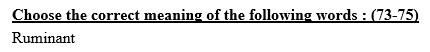
Solve: Ruminant অর্থ হলো জাবর কাটা প্রাণী। অন্যদিকে, Cud-chewing animal- জাবর কাটা প্রাণী; Soup- ঝোল; Gossip- খোশগল্প; Noise-maker-শোরগোলকারী।
correct_answer: A
Recently fixed (for context)
Q14 • International Affairs fixed
জোট নিরপেক্ষ আন্দোলন (NAM) এর আগামী শীর্ষ সম্মেলন কোন শহরে অনুষ্ঠিত হবে?
A. দিল্লী
B. ডারবান
C. ঢাকা
D. জাকার্তা
Solve: জোট নিরপেক্ষ আন্দোলনের ত্রয়োদশ সম্মেলন ঢাকায় অনুষ্ঠিত হওয়ার কথা থাকলেও বাংলাদেশ সরকার এ সম্মেলন অনুষ্ঠানে অপারগতা প্রকাশ করলে সম্মেলন পিছিয়ে যায় এবং ২০০৩ সালের ২০-২৫ ফেব্রুয়ারি এ সম্মেলন মালয়েশিয়ার রাজধানী কুয়ালালামপুরে অনুষ্ঠিত হয়। চতুর্দশ সম্মেলন ১১-১৬ সেপ্টেম্বর ২০০৬ কিউবার রাজধানী হ্যাভানায়, পঞ্চদশ সম্মেলন ১১-১৬ জুলাই ২০০৯ মিশরের কায়রোতে, ষোড়শ সম্মেলন ২৬-৩১ আগস্ট ২০১২ ইরানের তেহরানে এবং সপ্তদশ সম্মেলন ১৩-১৮ সেপ্টেম্বর ২০১৬ ভেনিজুয়েলার কারাকাসে অনুষ্ঠিত হয়। অষ্টাদশ সম্মেলন ২০১৯ সালে আজারবাইজানের বাকুতে অনুষ্ঠিত হয়। ২০২৩ সালে জোট নিরপেক্ষ আন্দোলন উগান্ডার রাজধানী কাম্পালায় অনুষ্ঠিত হবে।
Q18 • International Affairs fixed
জাতিসংঘের বর্তমান সদস্য সংখ্যা কত?
A. ১৯৫
B. ১৮৯
C. ১৭০
D. ১৭৫
Solve:
Q24 • International Affairs fixed
ট্রান্সপারেন্সি ইন্টারন্যাশনালের মতো বিশ্বের সবচেয়ে বেশি দুর্নীতিগ্রস্ত দেশ কোনটি?
A. সুইডেন
B. নাইজেরিয়া
C. বাংলাদেশ
D. ভারত
Solve: ট্রান্সপারেন্সি ইন্টারন্যাশনালের বার্ষিক দুর্নীতির ধারণাসূচক ২০২২ অনুযায়ী বিশ্বের সবচেয়ে বেশি দুর্নীতিগ্রস্ত দেশ হলো সোমালিয়া। এবং সবচেয়ে কম দুর্নীতিগ্রস্ত দেশ ডেনমার্ক। দুর্নীতিগ্রস্ত দেশের মধ্যে বাংলাদেশের অবস্থান ১২তম।
Q33 • Bangladesh Affairs fixed
ঢাকা বিভাগে কয়টি জেলা আছে?
A. ১৫টি
B. ১৭টি
C. ১৪টি
D. ১২টি
Solve: ঢাকা বিভাগে মোট ১৩টি জেলা রয়েছে। এগুলো হলো- ঢাকা, গাজীপুর, নারায়ণগঞ্জ, নরসিংদী, মুন্সিগঞ্জ, মানিকগঞ্জ, টাঙ্গাইল, কিশোরগঞ্জ ও মাদারীপুর, ফরিদপুর, শরীয়তপুর, গোপালগঞ্জ ও রাজবাড়ি। উল্লেখ্য, চট্রগ্রাম বিভাগে ১১টি, রাজশাহী বিভাগে ৮টি, রংপুর বিভাগে ৮টি, খুলনা বিভাগে ১০টি, সিলেট বিভাগে ৪টি, বরিশাল বিভাগে ৬টি ও ময়মনসিংহ বিভাগে ৪টি (ময়মনসিংহ, জামালপুর, নেত্রকোনা, শেরপুর) জেলা রয়েছে।
Q36 • International Affairs fixed
NAM- এর বর্তমান সদস্য সংখ্যা কত?
A. ১০০
B. ১১৫
C. ১১৪
D. ১১৮
Solve: NAM-এর বর্তমান সদস্য সংখ্যা ১২০। ২৫ মে, ২০১১ আজারবাইজান ও ফিজিকে সদস্য পদ দেয়া হলে সদস্য সংখ্যা ১২০-এ উন্নীত হয়।
23rd BCS — 2001-03-23 / সুরমা (100 Qs, manual 1, fixed 3)
Needs manual verification
Q25 • Bangladesh Affairs (বাংলাদেশ বিষয়াবলি) blank answer (defective) recently fixed
বাংলাদেশ সিভিল সার্ভিসের (BCS) ক্যাডার কতটি?
A. ২৯টি
B. ২২টি
C. ২১টি
D. ৫টি
Solve: বর্তমানে বাংলাদেশ সিভিল সার্ভিসের (BCS) ক্যাডার সংখ্যা ২৬টি। ২০১৮ সালের ১৩ নভেম্বর বাংলাদেশ সিভিল সার্ভিসের ইকনমিক ক্যাডার বিলুপ্ত করায় বর্তমানে বিসিএস ক্যাডার সংখ্যা হয় ২৬টি।
correct_answer:
Recently fixed (for context)
Q6 • General Science fixed
টেস্টিং সল্ট-এর রাসায়নিক নাম কি?
A. সোডিয়াম বাইকার্বোনেট
B. সোডিয়াম গ্লুটামেট
C. পটাশিয়াম বাইকার্বোনেট
D. সোডিয়াম মনোগ্লুটামেট
Solve: সঠিক উত্তর হবে মনোসোডিয়াম গ্লুটামেট। মনোসোডিয়াম গ্লুটামেটকে সোডিয়াম গ্লুটামেট ও বলা হয়। সোডিয়াম বাইকার্বোনেট (NaHCO₃) হচ্ছে খাওয়ার সোডা এবং মনোসোডিয়াম গ্লুটামেটকে সাধারণ কথায় টেস্টিং সল্ট বলে।
Q27 • International Affairs fixed
ইন্দোনেশিয়ার নতুন রাষ্ট্রপতির নাম কি?
A. জেনারেল সুহার্তো
B. মেঘবতী সুকর্নপুত্রী
C. আব্দুর রহমান ওয়াহিদ
D. জেনারেল বিয়ান্তো
Solve: ইন্দোনেশিয়ার বর্তমান রাষ্ট্রপতি জোকো উইদোদো (২০১৪-বর্তমান) স্বৈরশাসক জেনারেল সুহার্তো দেশটির দ্বিতীয় প্রেসিডেন্ট, যিনি ১২ মার্চ, ১৯৬৭-২১ মে, ১৯৯৮ দীর্ঘ ৩২ বছর ক্ষমতায় ছিলেন। আব্দুর রহমান ওয়াহিদ ছিলেন ইন্দোনেশিয়ার চতুর্থ প্রেসিডেন্ট, যার মেয়াদকাল ১৯ অক্টোবর, ১৯৯৯-২৩ জুলাই, ২০০১। মুসলিম বিশ্বের প্রথম নারী প্রেসিডেন্ট ও ইন্দোনেশিয়ার পঞ্চম প্রেসিডেন্ট মেঘবতী সুকর্নপুত্রী ক্ষমতাসীন ছিলেন ২৩ জুলাই, ২০০১-২১ অক্টোবর, ২০০৪ পর্যন্ত। তিনি দেশটির প্রথম প্রেসিডেন্ট ড. আহমদ সুকর্নের (মেয়াদকাল ১৮.০৮.১৯৪৫-১২.০৬.১৯৬৭) কন্যা।
Q45 • International Affairs fixed
বেলজিয়ামের মুদ্রার নাম কি?
A. শিলিং
B. ফ্রাংক
C. পাউন্ড
D. ক্রোনা
Solve: ফ্রাংক বেলজিয়ামের সাবেক মুদ্রা। ইউরো চালু হওয়ার পর ২০০২ সালের ১ জুলাই থেকে বেলজিয়ামের মুদ্রা ফ্রাংক বিলুপ্ত করা হয়। অন্যদিকে, শিলিং অস্ট্রিয়ার ইউরো গ্রহণের পূর্বের মুদ্রা, পাউন্ড স্টারলিং যুক্তরাজ্যের মুদ্রা, সুইডিস ক্রোনা সুইডেনের মুদ্রা এবং ডেনিস ক্রোনা ডেনমার্কের মুদ্রা।
24th BCS — 2003-08-08 / পদ্ম (100 Qs, manual 4, fixed 4)
Needs manual verification
Q66 • International Affairs (আন্তর্জাতিক বিষয়াবলি) blank answer (defective) recently fixed
‘ডেটন শান্তিচুক্তি’ স্বাক্ষরিত হয়-
A. ১৯৯০ সালে
B. ১৯৯১ সালে
C. ১৯৯২ সালে
D. ১৯৯৩ সালে
Solve: বসনিয়া-হার্জেগোভিনায় শান্তি প্রতিষ্ঠার লক্ষ্যে যুক্তরাষ্ট্রের ওহিও অঙ্গরাজ্যের ডেটন শহরের রাইট-পেটারসন বিমানবাহিনী ঘাঁটিতে ১৯৯৫ সালের নভেম্বরে এক শান্তি চুক্তিতে উপনীত হওয়ার পর ১৪ ডিসেম্বর ১৯৯৫ সালে আনুষ্ঠানিকভাবে প্যারিসে যে শান্তি চুক্তি স্বাক্ষরিত হয় তাই ডেটন শান্তি চুক্তি নামে পরিচিত।
correct_answer:
Q68 • International Affairs (আন্তর্জাতিক বিষয়াবলি) blank answer (defective) recently fixed
MIGA কখন গঠিত হয়?
A. ১৯৮০ সালে
B. ১৯৮২ সালে
C. ১৯৮৫ সালে
D. ১৯৮৬ সালে
Solve: MIGA-এর পূর্ণরূপ Multilateral Investment Guarantee Agency. এটি বিশ্বব্যাংক গ্রুপের অঙ্গসংস্থা হিসেবে ১৯৮৮ সালের ১২ এপ্রিল প্রতিষ্ঠিত হয়। এর সদর দপ্তর যুক্তরাষ্ট্রের ওয়াশিংটন ডিসি। উন্নয়নশীল দেশসমূহে বৈদেশিক বিনিয়োগ উৎসাহিত করাই এ অঙ্গসংস্থার লক্ষ্য ও উদ্দেশ্য।
correct_answer:
Q69 • International Affairs (আন্তর্জাতিক বিষয়াবলি) blank answer (defective) recently fixed
বিখ্যাত ল্যান্ডমার্ক টাওয়ার অবস্থিত-
A. নিউইয়র্কে
B. শিকাগোতে
C. টোকিওতে
D. লন্ডনে
Solve: জাপানের ইয়োকোহামা শহরে অবস্থিত ল্যান্ডমার্ক টাওয়ার ১৯৯৩ সালে নির্মিত হয়। ভূমিকম্প সহনীয় এই ভবনটির উচ্চতা ২৯৬.৩ মিটার বা ৯৭২ ফুট। এটা ৭৩ তলাবিশিষ্ট।
correct_answer:
Q86 • General Science (সাধারণ বিজ্ঞান) blank answer (defective) recently fixed
মূল নেই কোন উদ্ভিদে?
A. ফণিমনসা
B. বীরুৎ
C. গুল্ম
D. সাইকাস
Solve: উপরিউক্ত সকল উদ্ভিদেরই মূল রয়েছে। ফণিমনসা টেরিডোফাইটা গ্রুপের উদ্ভিদ। এ জাতীয় উদ্ভিদের মূল, কাণ্ড ও পাতা থাকে কিন্তু ফুল ও ফল হয় না। কোমল কাণ্ডযুক্ত ছোট ছোট উদ্ভিদকে বীরুৎ বলে। যেমন- ধান, ছোলা, আদা ইত্যাদি। সাইকাস হচ্ছে ফ্যানেরোগ্যামিয়া (Phanerogamia) গ্রুপের উদ্ভিদ, যাদের ফুল হয় ও মূল, কাণ্ড প্রভৃতি থাকে এবং যেসব উদ্ভিদ আকারে ছোট ও কাষ্ঠল কিন্তু গুড়ি নেই তাদেরকে গুল্ম বলে। যেমন গোলাপ, জবা ইত্যাদি। পৃথিবীতে কিছু শৈবাল ও ছত্রাক রয়েছে, যাদের মূল নেই। যেমনমিউকর, সারগামাস, ঈস্ট ইত্যাদি।
correct_answer:
Recently fixed (for context)
Q47 • Bangladesh Affairs fixed
মহিলা পুলিশ প্রথম নিয়োগ করা হয় কোন সালে?
A. ১৯৭২ সালে
B. ১৯৭৬ সালে
C. ১৯৭৭ সালে
D. ১৯৭৮ সালে
Solve: ১৯৭৪ সালে সর্বপ্রথম সাদা পোশাকে স্পেশাল ব্রাঞ্চে ১২ জন মহিলা পুলিশ নিয়োগ করা হয়। ইউনিফর্মধারী নারী পুলিশের যাত্রা শুরু হয় ১৯৭৬ সালে। অতঃপর ১৯৭৮ সালে ঢাকা মহানগর পুলিশে মহিলা নিয়োগ করা হয়। বাংলাদেশ পুলিশের প্রথম নারী ডিআইজি ফাতেমা বেগম ও প্রথম নারী ওসি হোসনে আরা বেগম (নিয়োগ ১৭ মে ২০০৯, ক্যান্টনমেন্ট থানা, ঢাকা)। ১৯৮৬ সালে চারজন মহিলা পুলিশ অফিসার বিসিএস পরীক্ষার মাধ্যমে এএসপি হিসেবে যোগদান করেন। নারী পুলিশ সদস্যদের সমন্বয়ে গঠিত আর্মড পুলিশ ব্যাটালিয়ন-১১ (APBn-11)-এর যাত্রা শুরু হয় ২২ জুন ২০১১।
Q56 • Bangladesh Affairs fixed
বাংলাদেশে সম্প্রতি এই জেলায় চা বাগান করা হয় -
A. পঞ্চগড়
B. দিনাজপুর
C. কুড়িগ্রাম
D. বান্দরবান
Solve: পঞ্চগড় জেলায় ২০০০ সালে একটি চায়ের বাগানে চারা লাগানো হয়েছে। দেশের উত্তরাঞ্চলে পরীক্ষামূলকভাবে প্রথম এ বাগানে চা রোপণ করা হয়। উল্লেখ্য, বাংলাদেশে ১৮৪০ সালে প্রথম চট্টগ্রামে চা বাগান তৈরির কাজ শুরু হয়। এর অব্যবহিত পরে ১৮৫৭ সালে সিলেটের মালিনীছড়ায় দেশের প্রথম বাণিজ্যিক চা বাগান প্রতিষ্ঠা করা হয়। ২৪ মার্চ, ২০১৫ প্রথমবারের মতো নীলফামারীতে চা চাষ শুরু হয়। বর্তমানে বাংলাদেশ চা বোর্ডের নিবন্ধনকৃত চা বাগানের সংখ্যা ১৬৭টি।
Q72 • International Affairs fixed
ওআইসি-এর বর্তমান মহাসচিব কোন দেশের নাগরিক
A. বাংলাদেশ
B. তুরস্ক
C. মালয়েশিয়া
D. মরক্কো
Solve: OIC এর বর্তমান মহাসচিব নির্বাচিত হয়েছেন হুসেইন ইব্রাহিম তাহা। তিনি আফ্রিকার দেশ চাদের পররাষ্ট্রমন্ত্রী হিসেবে দায়িত্ব পালন করেছেন। এ সংস্থাটি ২৫ সেপ্টেম্বর ১৯৬৯ সালে প্রতিষ্ঠিত হয়। এর সদর দপ্তর সৌদি আরবের জেদ্দায় অবস্থিত। এর বর্তমান সদস্য সংখ্যা ৫৭ (প্রতিষ্ঠাকালীন সদস্য ২৫)। বাংলাদেশ যোগদান করে ২৩ ফেব্রুয়ারি, ১৯৭৪ (৩২ তম সদস্য)।
Q91 • Mathematical Reasoning fixed
১² + ৩² + ৫² + ...... + ৩১² সমান কত?
A. ২৫৮
B. ২৫৬
C. ২৫৪
D. ২৫২
Solve:
25th BCS — 2004-03-09 / সুরমা (100 Qs, manual 2, fixed 7)
Needs manual verification
Q65 • International Affairs (আন্তর্জাতিক বিষয়াবলি) blank answer (defective) recently fixed
কোন দেশটি ল্যাটিন আমেরিকার অন্তর্ভুক্ত নয়?
A. ব্রাজিল
B. আর্জেটিনা
C. পেরু
D. পানামা
Solve: যদি ভৌগোলিকভাবে ল্যাটিন আমেরিকা বলতে পুরো দক্ষিণ আমেরিকা থেকে উত্তর আমেরিকার মেক্সিকোর উত্তর সীমান্ত পর্যন্ত অঞ্চলকে বোঝায়। সে হিসেবে, প্রশ্নে উল্লিখিত চারটি দেশই ল্যাটিন আমেরিকার অন্তর্ভুক্ত। এ অঞ্চলে মোট ২০টি স্বাধীন দেশ রয়েছে। দেশগুলো হলো- ইকুয়েডর, আর্জেন্টিনা, উরুগুয়ে, কিউবা, কোস্টারিকা, কলম্বিয়া, এল সালভেদর, গুয়াতেমালা, ডোমিনিকান রিপাবলিক, চিলি, নিকারাগুয়া, পানামা, প্যারাগুয়ে, পেরু, বলিভিয়া, ভেনিজুয়েলা, ব্রাজিল, মেক্সিকো, হন্ডুরাস ও হাইতি। বর্তমানে ক্যারিবিয়ান এলাকার জ্যামাইকা এবং ত্রিনিদাদ ও টোবাগোকেও ল্যাটিন আমেরিকার দেশ হিসেবে বিবেচনা করা হয়।
correct_answer:
Q99 • General Science (সাধারণ বিজ্ঞান) blank answer (defective) recently fixed
সুন্দরবনের আয়তন প্রায় কত বর্গ কিলোমিটার?
A. ৩৮০০
B. ৪১০০
C. ৫৫৭৫
D. ৬৯০০
Solve: বিশ্বের সবচেয়ে বড় ম্যানগ্রোভ বনভূমি হলো সুন্দরবন। পশ্চিমবঙ্গ ও বাংলাদেশের এলাকা মিলিয়ে এর আয়তন ১০ হাজার বর্গকিলোমিটার। তবে বাংলাদেশ অংশের আয়তন ৬০১৭ বর্গ কিলোমিটার (তথ্য: বন অধিদপ্তর)। উল্লেখ্য, ইউনেস্কোর বিশ্বসম্পদ ও ঐতিহ্য কমিটি ১৯৯৭ সালের ৬ ডিসেম্বর সুন্দরবনকে ৭৯৮ তম ‘বিশ্ব ঐতিহ্য’ হিসেবে ঘোষণা করে।
correct_answer:
Recently fixed (for context)
Q3 • Bangla Language & Literature fixed
কোন কবিতা রচনার জন্য কাজী নজরুল ইসলামের ‘অগ্নিবীণা’ কাব্য নিষিদ্ধ হয়?
A. বিদ্রোহী
B. আনন্দময়ীর আগমনে
C. প্রলয়োল্লাস
D. রক্তাস্বরধারিনী মা
Solve: বিদ্রোহী কবি নজরুল ইসলামের বিখ্যাত কাব্যগ্রন্হ ‘অগ্নিবীণা’তে প্রলয়োল্লাস, বিদ্রোহী এবং রক্তাম্বরধারিণী মা কবিতা তিনটি অন্তর্ভুক্ত। ধূমকেতুর ২৬ সেপ্টেম্বর, ১৯২২ সংখ্যায় নজরুলের রাজনৈতিক কবিতা ‘আনন্দময়ীর আগমনে’ প্রকাশ হলে ৮ নভেম্বর পত্রিকার ঐ সংখ্যা নিষিদ্ধ করা হয় এবং কবিতা রচনার জন্য ব্রিটিশ সরকার কর্তৃক ১ বছর কারাদণ্ড দণ্ডিত হন। উল্লেখ্য, অনেকে লিখে থাকেন ‘অগ্নিবীণা’ ব্রিটিশ সরকার কর্তৃক বাজেয়াপ্ত হয়েছিল। এ তথ্য সত্য নয়। গ্রন্হটি কোনোদিন নিষিদ্ধ হয়নি।
Q25 • Bangladesh Affairs fixed
সার্কভুক্ত কোন দেশের দূতাবাস বাংলাদেশে নেই?
A. মালদ্বীপ
B. শ্রীলংকা
C. নেপাল
D. ভুটান
Solve: সার্কভুক্ত সকল দেশের দূতাবাস বাংলাদেশে রয়েছে। উল্লেখ্য, ১ এপ্রিল ২০০৮ মালদ্বীপের দূতাবাস বাংলাদেশে চালু হলে ও পরবর্তীতে ২০১৪ সালের ৩১ মার্চ আবার বন্ধ করে দেয়া হয়। পুনরায় ১ জানুয়ারি ২০১৫ মালদ্বীপ তাদের দূতাবাস বাংলাদেশে চালু করে। সার্কভুক্ত দেশগুলো হলো - বাংলাদেশ, ভারত, পাকিস্তান, শ্রীলংকা, নেপাল, ভুটান, মালদ্বীপ ও আফগানিস্তান।
Q59 • International Affairs fixed
এ উপমহাদেশ থেকে এ যাবৎ কতজন নোবেল পুরস্কার পেয়েছেন?
A. চারজন
B. পাঁচজন
C. ছয়জন
D. সাতজন
Solve: এ উপমহাদেশ থেকে এ পর্যন্ত ১২ জন ব্যক্তি নোবেল পুরস্কার পেয়েছেন। তারা হলেন-সাহিত্যে রবীন্দ্রনাথ ঠাকুর (১৯১৩), পদার্থবিজ্ঞানে চন্দ্রশেখর ভেঙ্কটরমণ (১৯৩৯), চিকিৎসায় হরগোবিন্দ খোরানা (১৯৬৮), শান্তিতে মাদার তেরেসা (১৯৭৯), পদার্থবিজ্ঞানে আবদুস সালাম (১৯৭৯), পদার্থবিজ্ঞানে সুব্রামানিয়াম চন্দ্রশেখর (১৯৮৩), অর্থনীতিতে অমর্ত্য সেন (১৯৯৮), শান্তিতে ড. মুহাম্মদ ইউনূস (২০০৬), রসায়নে ভেঙ্কটরমণ রামকৃষ্ণ (২০০৯), শান্তিতে মালালা ইউসুফজাঈ ও কৈলাশ সত্যার্থী (২০১৪) এবং অর্থনীতিতে অভিজিৎ ব্যানার্জি (২০১৯)।
Q60 • International Affairs fixed
নেপালের বর্তমান প্রধানমন্ত্রীর নাম কি?
A. মি.কইরালা
B. মি. থাপা
C. মি. রানা
D. মি. দেউবা
Solve: নেপালের বর্তমান প্রধানমন্ত্রী কে পি শর্মা অলি (১৫ ফেব্রুয়ারি ২০২২-বর্তমান)। উল্লেখ্য, গিরিজা প্রসাদ কৈরালা গণতান্ত্রিকভাবে নির্বাচিত নেপালের প্রথম প্রধানমন্ত্রী ছিলেন।
Q62 • International Affairs fixed
বর্তমানে জাতিসংঘের মহাসচিব কোন দেশের নাগরিক?
A. গিনি
B. ঘানা
C. সেনেগাল
D. মরক্কো
Solve: ১৩ অক্টোবর, ২০১৬ জাতিসংঘের নবম মহাসচিব নির্বাচিত হন পর্তুগালের সাবেক প্রধানমন্ত্রী অ্যান্টনিও গুতেরেস। ৩১ ডিসেম্বর, ২০১৬ অষ্টম মহাসচিব বান কি মুনের মেয়াদ পূর্ণ হলে ১ জানুয়ারি, ২০১৭ জাতিসংঘের মহাসচিব হিসেবে দায়িত্ব গ্রহণ করেন তিনি। ২৬ ফেব্রুয়ারি ২০২১ তিনি পুনরায় পুনর্বিাচিত হন।
Q63 • International Affairs fixed
বিশ্বের নতুনতম রাষ্ট্র কোনটি?
A. লাইবেরিয়া
B. হংকং
C. পূর্ব তিমুর
D. তাইওয়ান
Solve: দীর্ঘ দিনের চলমান সংঘাত অবসানে ২০১১ সালের ১৫ জানুয়ারি অনুষ্ঠিত গণভোটের ভিত্তিতে দক্ষিণ সুদান ৯ জুলাই, ২০১১ থেকে বিশ্বের নবীনতম (১৯৫তম) স্বাধীন দেশ হিসেবে যাত্রা শুরুর সুযোগ পায়। বিশ্বের নবীন তম প্রজাতন্ত্র বার্বাডোজ (২০২২)।
Q70 • International Affairs fixed
এ বছর তামাক নিয়ন্ত্রণে আন্তর্জাতিক জেনেভা সম্মেলনে সভাপতি কোন দেশের নাগরিক?
A. বাংলাদেশ
B. ভারত
C. পাকিস্তান
D. সুইজারল্যান্ড
Solve: প্রশ্নে উল্লিখিত এ বছর বলতে ২০০৪ সালকে বোঝানো হয়েছে। ২০০৪ সালে বিশ্ব স্বাস্থ্য সংস্থার ৫৭তম সম্মেলনে সভাপতিত্ব করেন পাকিস্তানের স্বাস্থ্য মন্ত্রী মোহাম্মদ নাসের খান। ২০০৩ সালে ৫৬তম সম্মেলনের সভাপতি ছিলেন বাংলাদেশের তৎকালীন স্বাস্থ্যমন্ত্রী ড. খন্দকার মোশাররফ হোসেন। ২০১৬ সালে ৬৯তম সভাপতি ছিলেন ওমানের স্বাস্থমন্ত্রী ড. আহমেদ মোহাম্মদ আল সাইদি। বর্তমানে সম্মেলনটি বন্ধ রয়েছে। Choose the correct alternative and mark its letter on your answer sheet.
26th BCS — 2000-12-13 / সুরমা (200 Qs, manual 4, fixed 7)
Needs manual verification
Q9 • Bangla Language & Literature (বাংলা ভাষা ও সাহিত্য) blank answer (defective) recently fixed
‘যা কিছু হারায় গিন্নী বলেন, কেষ্টা বেটাই চোর’-এখানে ‘হারায়’ কোন ধাতু?
A. প্রযোজ্য ধাতু
B. ভাববাচ্যের ধাতু
C. সংযোগমূলক ধাতু
D. নাম ধাতু
Solve: সঠিক হবে প্রযোজক ধাতু। মৌলিক ধাতুর পরে প্রেরণার্থ (অপরকে নিয়োজিত করা অর্থে) ‘আ’ প্রত্যয় যোগ করে যে ধাতু গঠিত হয় তাকেই প্রযোজক বা ণিজন্ত ধাতু বা কখনও কখনও কর্মবাচ্যের ধাতু বলা হয়। অন্যদিকে নাম ধাতু হলো বিশেষ্য, বিশেষণ ও অনুকার অব্যয়ের পরে ‘আ’ প্রত্যয় যোগে গঠিত ধাতু এবং সংযোগমূলক ধাতু হলো বিশেষ্য, বিশেষণ বা ধ্বন্যাত্মক অব্যয়ের সাথে কর, দে, পা, খা, ছাড় ইত্যাদি মৌলিক ধাতুর সংযোগে গঠিত ধাতু। যেমন-ঘুম (বিশেষ্য) + আ + ক্রিয়া বিভক্তি = ঘুমাচ্ছে (নাম ধাতু) যোগ (বিশেষ্য) + কর (ধাতু) = যোগ কর (সংযোগমূলক ধাতু)
correct_answer:
Q91 • Bangladesh Affairs (বাংলাদেশ বিষয়াবলি) blank answer (defective) recently fixed
বাংলাদেশের GDP তে কৃষিখাতের অবদান কত?
A. ৭০ শতাংশ
B. ৭৩ শতাংশ
C. ৭৫ শতাংশ
D. ৭৭ শতাংশ
Solve: অর্থনৈতিক সমীক্ষা ২০২৩ অনুসারে বাংলাদেশের GDP তে কৃষিখাতের অবদান ১১.২০%, শিল্পখাতের অবদান ৩৭.৫৬% এবং সেবা খাতের অবদান ৫১.২৪%
correct_answer:
Q99 • Bangladesh Affairs (বাংলাদেশ বিষয়াবলি) solve image blank answer (defective) recently fixed
বাংলাদেশের একমাত্র মৎস্য গবেষণা ইনস্টিটিউট কোথায় অবস্থিত?
A. রাজশাহী
B. ঢাকা
C. চট্টগ্রাম
D. চাঁদপুর
Solve image: images/26th_bcs/q99_img1.jpg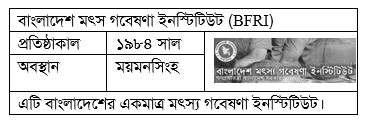
Solve: বাংলাদেশ মৎস্য গবেষণা ইনস্টিটিউটের প্রধান কার্যালয় অবস্থিত ময়মনসিংহ তবে মৎস্য সম্পদের প্রকৃতি অনুযায়ী ৫টি এলাকায় ইনস্টিটিউটের ৫টি গবেষণা কেন্দ্র রয়েছে। ১. স্বাদু পানি কেন্দ্র- ময়মনসিংহ, ২. সামুদ্রিক মৎস্য ও প্রযুক্তি কেন্দ্র- কক্সবাজার, ৩. চিংড়ি গবেষণা কেন্দ্র- বাগেরহাট, ৪. নদী কেন্দ্র- চাঁদপুর, ৫. লোনাপানি কেন্দ্র- খুলনার পাইকগাছা।
correct_answer:
Q145 • International Affairs (আন্তর্জাতিক বিষয়াবলি) blank answer (defective) recently fixed
ইউরো মুদ্রা কখন চালু হয়?
A. ১৯৯৭ সালের ১ জানুয়ারি
B. ২০০০ সালের ১ মার্চ
C. ২০০১ সালের ১ জানুয়ারি
D. ১৯৯৮ সালের ১ নভেম্বর
Solve: ইউরো মুদ্রা চালু হয় ১ জানুয়ারি ১৯৯৯, ইউরো ব্যাংক নোটের প্রচলন হয় ১ জানুয়ারি ২০০২। সদস্য দেশগুলোর নিজস্ব ব্যাংক নোট ও মুদ্রা বাতিল হয় ১ জুলাই ২০০২। ইউরো মুদ্রার জনক রবার্ট মুন্ডেল। ২০২৩ সালের ১ জানুয়ারি ক্রোয়েশিয়া ২০তম সদস্য দেশ হিসেবে ইউরো মুদ্রা গ্রহণ করে।
correct_answer:
Recently fixed (for context)
Q7 • Bangla Language & Literature fixed
‘নেমেসিস’ নাটকে নূরুল মোমেন কোন বিষয়কে তুলে ধরেছেন?
A. দ্বিতীয় বিশ্বযুদ্ধ
B. ঊনপঞ্চাশের মন্বন্তর
C. বায়ান্নর ভাষা আন্দোলন
D. একাত্তরের মুক্তিযুদ্ধ
Solve: নেমেসিস নাটকে নূরুল মোমেন দ্বিতীয় বিশ্বযুদ্ধোত্তর দুর্ভিক্ষ, মজুতদারদের পিশাচবৃত্তি ও নিরন্নদের হাহাকারের বাস্তব চিত্র তুলে ধরেছেন। দ্বিতীয় বিশ্বযুদ্ধের ঘটনাবলি এ নাটকের উপজীব্য নয়। নাটকটি দ্বিতীয় বিশ্বযুদ্ধের প্রেক্ষাপটে সংঘটিত পঞ্চাশের মন্বন্তর (১৩৫০ বঙ্গাব্দ) বা ১৯৪৩ সালের দুর্ভিক্ষকে উপজীব্য করে রচিত। প্রশ্নে ‘উনপঞ্চাশের মন্বন্তরের পরিবর্তে ‘পঞ্চাশের মন্বন্তর’ থাকলে তা হতো সঠিক উত্তর।
Q89 • Bangladesh Affairs fixed
বাংলা একাডেমির প্রথম মহাপরিচালক কে ছিলেন?
A. প্রফেসর আব্দল হাই
B. ড. মুহম্মদ শহীদুল্লাহ
C. কাজী মোতাহার হোসেন
D. ড. এনামুল হক
Solve: ড. মুহম্মদ এনামুল হক ১৯৫৬ সালের ১ ডিসেম্বর বাংলা একাডেমির প্রথম পরিচালক হিসেবে নিযুক্ত হন। দেশ স্বাধীন হওয়ার পর সরকার পরিচালিত কেন্দ্রীয় বাংলা -উন্নয়ন বোর্ডকে বাংলা একাডেমির সাথে একীভূত করে এর কাঠামোগত পরিবর্তন আনা হয় ও পরিচালকের পদমর্যাদা মহাপরিচালকে উন্নীত করা হয়। বাংলা একাডেমির প্রথম মহাপরিচালক ছিলেন অধ্যাপক মযহারুল ইসলাম (২ জুন ১৯৭২-১২ আগস্ট ১৯৭৪) ।
Q90 • Bangladesh Affairs fixed
বাংলাদেশের সর্ববৃহৎ ঈদের জামাত সাধারণত কোথায় হয়ে থাকে?
A. বায়তুল মোককাররম-ঢাকা
B. শাহ মখদুম মসজিদ-রাজশাহী
C. জাতীয় ঈদগাহ-ঢাকা
D. শোলাকিয়া-কিশোরগঞ্জ
Solve: কিশোরগঞ্জ জেলার শোলাকিয়ায় অনুষ্ঠিত দক্ষিণ এশিয়ার সর্ববৃহৎ ঈদের জামায়াতে তিন থেকে সাড়ে তিন লক্ষ লোকের জামায়াত হতো। সম্প্রতি দিনাজপুরের গোর-এ শহীদ ময়দানে দেশের সর্ববৃহৎ ঈদের জামাত অনুষ্ঠিত হয়। বৃহৎ এ ঈদের জামাতে ছয় লাখ মুসল্লি একসঙ্গে নামাজ আদায় করেছেন বলে জানায় আয়োজক কমিটি।
Q93 • Bangladesh Affairs fixed
বাংলাদেশে মোট আবাদযোগ্য জমির পরিমাণ কত?
A. ২ কোটি ৪০ লক্ষ একর
B. ২ কোটি ৫০ লক্ষ একর
C. ২ কোটি ২৫ লক্ষ একর
D. ২ কোটি একর
Solve:
Q97 • Bangladesh Affairs fixed
চলতি আর্থিক বাজেটে কৃষিতে ভর্তুকি কত টাকা ধরা হয়েছে?
A. ৩০০ কোটি টাকা
B. ৪০০ কোটি টাকা
C. ৫০০ কোটি টাকা
D. ৬০০ কোটি টাকা
Solve: ২০২৩-২৪ অর্থবছরে কৃষি খাতে ভর্তুকি ধরা হয়েছে ১৭,৫৫৩ কোটি টাকা।
Q123 • International Affairs fixed
শান্তির জন্য প্রথম কোন মহিলা নোবেল পুরস্কার পান?
A. আলভা মায়ারডাল
B. অং সান সুচি
C. শিরিন এবাদি
D. মাদার তেরেসা
Solve: শান্তিতে প্রথম মহিলা নোবেল বিজয়ী বার্থাভন সুটনার (অস্ট্রিয়া, ১৯০৫ সালে)। তবে উল্লিখিত চারজনের মধ্যে প্রথম নোবেল জয়ী মাদার তেরেসা। মাদার তেরেসা (আলবেনীয় বংশোদ্ভুত ) ১৯৭৯ সালে, আলভা মায়ারডাল (সুইডেন) ১৯৮২ সালে, অং সান সুচি (মিয়ানমার) ১৯৯০ সালে এবং শিরিন এবাদি (ইরান) ২০০৩ সালে নোবেল বিজয়ী হন।
Q160 • International Affairs fixed
IAEA- এর নির্বাহী প্রধান হলেন-
A. মোহাম্মদ আল বারাদি
B. আমর মুসা
C. আয়াদ আলাওয়ি
D. হামিদ কারজাই
Solve: আন্তর্জাতিক আণবিক শক্তি সংস্থা (IAEA) এর বর্তমান প্রধান নির্বাহী বা মহাপরিচালক হিসেবে রয়েছে জাপানের অধিবাসী Rafacl Grossi.
30th BCS — 2010-07-30 / সুরমা (100 Qs, manual 3, fixed 0)
Needs manual verification
Q32 • English Language & Literature (English Language & Literature) question image image-only question
A. to save oneself
B. to be self respectful
C. to keep calm
D. None of these
Q image: images/30th_bcs/q32_img1.jpg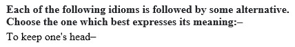
Solve: Keep one’s head- মাথা ঠাণ্ডা রাখা অর্থাৎ keep calm.
correct_answer: C
Q35 • English Language & Literature (English Language & Literature) question image image-only question
A. He is known by me.
B. He was known to me.
C. He has been known by me.
D. He is known to me.
Q image: images/30th_bcs/q35_img1.jpg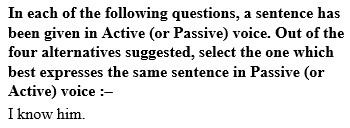
Solve: Know এর পরে to বসে।
correct_answer: D
Q39 • English Language & Literature (English Language & Literature) question image image-only question
A. wits
B. seats
C. lives
D. funds
Q image: images/30th_bcs/q39_img1.jpg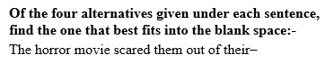
Solve: Out of one's wits একটি idiom, যার অর্থ অত্যন্ত বিচলিত।
correct_answer: A
31st BCS — 2011-05-27 / সুরমা (100 Qs, manual 0, fixed 5)
Recently fixed (for context)
Q37 • English Language & Literature fixed
Only those who are not serious to their success work by ___ and starts.
A. long odds
B. against time
C. every inch
D. fits
Solve: By fits and starts- অনিয়মিতভাবে, irregularly; at ir-regular intervals. এটি একটি Idiom। তাই শূন্যস্থানে fits বসবে। [LLM] প্রকৃত পরীক্ষার চতুর্থ অপশন ছিল ‘fits’ (kgc #55 ও biddabari ৩১তম—উত্তর fits); উৎস HTML-এ অপশনটি ‘d’ হয়ে গিয়েছিল, সংশোধন করে D বসানো হয়েছে।
Q47 • Bangladesh Affairs fixed
বাংলাদেশে কয়টি উপজাতীয় প্রতিষ্ঠান আছে?
A. ৮টি
B. ৫টি
C. ৪টি
D. ৩টি
Solve: বাংলাদেশে বর্তমানে উপজাতীয় (ক্ষুদ্র নৃ-গোষ্ঠী) সাংস্কৃতিক প্রতিষ্ঠান রয়েছে ৮টি। এগুলো হচ্ছে: ক্ষুদ্র নৃ-গোষ্ঠীর কালচারাল একাডেমী (বিরিশিরি, নেত্রকোনা), ক্ষুদ্র নৃ-গোষ্ঠীর সাংস্কৃতিক ইনস্টিটিউট (রাঙামাটি), ক্ষুদ্র নৃ-গোষ্ঠীর সাংস্কৃতিক ইনস্টিটিউট (বান্দরবান), কক্সবাজার সাংস্কৃতিক কেন্দ্র (কক্সবাজার), ক্ষুদ্র নৃ-গোষ্ঠীর সাংস্কৃতিক ইনস্টিটিউট (খাগড়াছড়ি), রাজশাহী বিভাগীয় ক্ষুদ্র নৃ-গোষ্ঠীর কালচারাল একাডেমী (রাজশাহী), মণিপুরী ললিতকলা একাডেমী (মৌলভীবাজার), রাখাইন সাংস্কৃতিক ইনস্টিটিউট (রামু, কক্সবাজার)। [LLM] প্রকৃত পরীক্ষার প্রথম অপশন ছিল ‘৮টি’, উত্তর ৮টি (biddabari ৩১তম; উৎস-নোটেও ৮টি প্রতিষ্ঠানের
Q48 • Bangladesh Affairs fixed
রেলপথে ঢাকা থেকে খুলনার দূরত্ব কত?
A. ৬২৭ কি.মি.
B. ৫২৯ কি.মি.
C. ৪১২ কি.মি.
D. ৩০৭ কি.মি.
Solve: বাংলাদেশে রেলওয়ে ইনফরমেশন বুক-এর তথ্য মতে রেলপথে ঢাকা থেকে খুলনার দূরত্ব ৪১২ কিমি। পক্ষান্তরে ঢাকা থেকে চট্রগ্রামের দূরত্ব ৩৪৬ কিমি, রাজশাহীর দূরত্ব ৪৪১ কিমি, সিলেটের দূরত্ব ৩১৯ কিমি। [LLM] গৃহীত দূরত্ব ৪১২ কি.মি. (bissoy-এর ৩১তম বিসিএস সংকলনে অপশন ‘৪১২’ই সঠিক; উৎস-নোটও রেলওয়ে ইনফরমেশন বুক অনুযায়ী ৪১২ বলে)। উৎস HTML-এ তৃতীয় অপশন ‘৪২০’ হয়ে গিয়েছিল, ‘৪১২’ করে C বসানো হয়েছে।
Q50 • Bangladesh Affairs fixed
বাংলাদেশ কোন সাল থেকে শান্তিরক্ষা বাহিনীতে কাজ করছে?
A. ১৯৮৮
B. ১৯৮৫
C. ১৯৭৫
D. ১৯৭৯
Solve: জাতিসংঘ তথ্য কেন্দ্র প্রকাশিত ‘বাংলাদেশ ও জাতিসংঘ: সহযোগিতার তিন দশক’ সাময়িকী এবং বাংলাদেশ সশস্ত্র বাহিনী প্রকাশিত ক্রোড়পত্র অনুসারে বাংলাদেশ ১৯৮৮ সালে UNIIMOG ও UNTAG-এ যোগদানের মধ্য দিয়ে শান্তিরক্ষা বাহিনীতে কাজ শুরু করে। [LLM] প্রকৃত পরীক্ষার প্রথম অপশন ছিল ‘১৯৮৮’, উত্তর ১৯৮৮ (biddabari ৩১তম; উৎস-নোটও UNIIMOG/UNTAG-এ ১৯৮৮-এ যোগদান বলে); উৎস HTML-এ ‘১৯৮২’ হয়ে গিয়েছিল, সংশোধন করে A বসানো হয়েছে।
Q83 • Mathematical Reasoning fixed
রহিম, করিম এবং গাজী তিন জনে একটি কাজ করতে পারে যথাক্রমে 15, 6 এবং 10 দিনে। তাহারা একত্রে তিন জনে কাজটি কত দিনে শেষ করতে পারবে?
A. 21 দিন
B. 18 দিন
C. 7 দিন
D. 3 দিন
Solve: [LLM] 1/15+1/6+1/10 = 1/3 → একত্রে 3 দিন। প্রকৃত পরীক্ষায় ‘3 দিন’ অপশন ছিল (kgc #19 ও biddabari #৮৩—উত্তর 3 দিন); উৎস HTML-এ চতুর্থ অপশন ‘15 দিন’ হয়ে গিয়েছিল, সংশোধন করে D বসানো হয়েছে।
32nd BCS — 2012-03-03 / সুরমা (100 Qs, manual 9, fixed 0)
Needs manual verification
Q21 • English Language & Literature (English Language & Literature) question image image-only question
A. Planned
B. Improvise
C. Impromptu
D. Immediate
Q image: images/32nd_bcs/q21_img1.jpg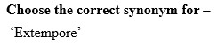
Solve: Extempore- পূর্বপ্রস্তুতিহীন; উপস্থিত। Planned- পরিকল্পিত; Improvise- তাৎক্ষণিক ভাবে উদ্ভাবন বা প্রস্তুত করা; Impromptu - প্রত্যুৎপন্ন; পূর্বপ্রস্তুতিহীন; Immediate- তাৎক্ষণিক। এখানে extempore এর synonym হলো Impromptu. Improvise অর্থের দিক দিয়ে সমার্থক হলেও parts of speech হিসেবে ভিন্ন।
correct_answer: C
Q25 • English Language & Literature (English Language & Literature) question image image-only question
A. We were less surprised than Rahman.
B. We were all surprised.
C. Rahman was less surprised than us.
D. We were as surprised as Rahman.
Q image: images/32nd_bcs/q25_img1.jpg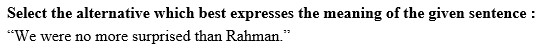
Solve: We were no more surprised than Rahman. অর্থ- আমরা রহমানের চেয়ে বেশি বিস্মিত ছিলাম না। যার অর্থ হলো We were as surprised as (not more than) Rahman. (আমরা রহমানের মতো বিস্মিত ছিলাম)। সুতরাং, অর্থ বিবেচনায় (ঘ) অপশনটিই সঠিক।
correct_answer: D
Q27 • English Language & Literature (English Language & Literature) question image image-only question
A. had better to get
B. had to better get
C. had better get
D. had better got
Q image: images/32nd_bcs/q27_img1.jpg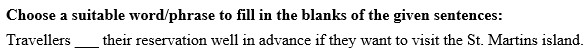
Solve: Had better এর পর verb এর base form বসে। যেমন: You had better hurry now.
correct_answer: C
Q29 • English Language & Literature (English Language & Literature) question image image-only question
A. make his ideas understood
B. get his ideas down pat
C. summarise his ideas
D. put together his ideas
Q image: images/32nd_bcs/q29_img1.jpg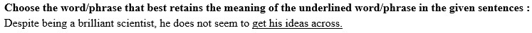
Solve: Get something across to somebody অর্থ- কাউকে কিছু বোঝাতে পারা অর্থাৎ make something understood.
correct_answer: A
Q31 • English Language & Literature (English Language & Literature) question image image-only question
A. Every
B. should vote
C. for
D. their
Q image: images/32nd_bcs/q31_img1.jpg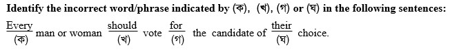
Solve: Every + singular noun subject হলে তার পরবর্তী pronoun টিও singular হবে। Their হলে plural, তাই এখানে singular pronoun ‘his/her’ হবে।
correct_answer: D
Q32 • English Language & Literature (English Language & Literature) question image image-only question
A. to diagnose
B. perfect
C. to which
D. will respond.
Q image: images/32nd_bcs/q32_img1.jpg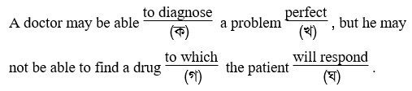
Solve: Verb কে modify করে adverb এবং verb এর পরে adverb বসে। যেমন: He speaks fluently. ‘Diagnose’ transitive verb (সকর্মক ক্রিয়া)। তাই Diagnose + object + adverb বসবে। Perfect এর adverb হলো perfectly.
correct_answer: B
Q33 • English Language & Literature (English Language & Literature) question image image-only question
A. to
B. improve
C. by
D. watch
Q image: images/32nd_bcs/q33_img1.jpg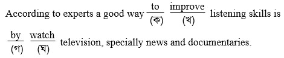
Solve: By এর পর gerund বসে। অর্থাৎ by + verb + ing. তাই watch এর পরিবর্তে watching হবে।
correct_answer: D
Q34 • English Language & Literature (English Language & Literature) question image image-only question
A. Laws : policeman
B. Butter : baker
C. Chalk : black board
D. Joy : emotion
Q image: images/32nd_bcs/q34_img1.jpg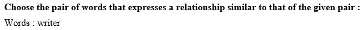
Solve: Writer (লেখক) কাজ করে words (শব্দ) নিয়ে এবং Baker (রুটি প্রস্তুতকারক) কাজ করে butter (মাখন) নিয়ে।
correct_answer: B
Q37 • English Language & Literature (English Language & Literature) question image image-only question
A. Choose the meaning of the given expressions :
B. It is likely to have bad news.
C. It is likely that nothing bad has happened.
D. It is unlikely that nothing bad has happened.
Q image: images/32nd_bcs/q37_img1.jpg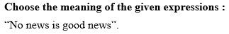
Solve: No news is good news. একটি প্রবাদ, যার অর্থ - কোনো খবর না থাকাটাই সুখবর। অর্থাৎ It is likely that nothing bad has happened. (সম্ভবত খারাপ কিছু ঘটেনি)।
correct_answer: C
33rd BCS — 2012-06-01 / সুরমা (100 Qs, manual 2, fixed 3)
Needs manual verification
Q27 • English Language & Literature (English Language & Literature) question image image-only question
A. their
B. her
C. whose
D. his
Q image: images/33rd_bcs/q27_img1.jpg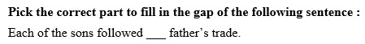
Solve: ‘Each of the sons’ এর এক বচন each তাই এর পরিবর্তে his/ her ব্যবহার করা যায়। যেহেতু son পুরুষবাচক তাই his হবে।
correct_answer: D
Q34 • English Language & Literature (English Language & Literature) question image image-only question
A. to receiving
B. to receive
C. in receiving
D. for receiving
Q image: images/33rd_bcs/q34_img1.jpg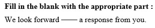
Solve: Look forward to, with a view to, be used to, get used to ইত্যাদির পর কোনো verb আসলে উক্ত verb এর সাথে ing যুক্ত হয়। সুতরাং সঠিক উত্তর হবে ‘to receiving’.
correct_answer: A
Recently fixed (for context)
Q12 • Bangla Language & Literature fixed
কোনটি সঠিক বানান?
A. নিশিথিনী
B. নীশিথিনী
C. নিশীথিনী
D. নিশিথিনি
Solve: শুদ্ধ বানান ‘নিশীথিনী’ (নিশীথ + ইনী; ইনী প্রত্যয়ের ঈ-কার হয়)। [LLM] অপশন C নিশীথিনীই প্রচলিত শুদ্ধ রূপ; বাকি তিনটি ভুল রূপ।
Q18 • Bangla Language & Literature fixed
কোন বানানটি শুদ্ধ?
A. পিপিলিকা
B. পিপীলিকা
C. পীপিলিকা
D. রোহিনী
Solve: শুদ্ধ বানান ‘পিপীলিকা’ (অর্থ পিঁপড়া)। [LLM] ‘রোহিনী’-এর প্রচলিত শুদ্ধ রূপ ‘রোহিণী’; বাকি অপশনগুলো ভুল রূপ।
Q54 • International Affairs fixed
পৃথিবীর বৃহত্তম বিমান বন্দরটি কোথায় অবস্থিত?
A. নিউইয়র্ক
B. লন্ডন
C. বার্লিন
D. দাম্মাম
Solve: আয়তনে পৃথিবীর বৃহত্তম বিমানবন্দর সৌদি আরবের ‘কিং ফাহাদ আন্তর্জাতিক বিমান বন্দর’, যা দাম্মামে অবস্থিত। [LLM] প্রকৃত পরীক্ষার অপশন ছিল ‘দাম্মাম’ (biddabari ৩৩তম ও kgc.ac.bd উভয় কী-তে উত্তর দাম্মাম); উৎস HTML-এ চতুর্থ অপশন ভুলবশত ‘জেদ্দা’ হয়ে গিয়েছিল—‘দাম্মাম’ করে উত্তর D বসানো হয়েছে। ‘জেদ্দা’ (কিং আব্দুল আজিজ বিমানবন্দর) বৃহত্তম নয়—এটি সাধারণ ভুল ধারণা।
34th BCS — 2013-05-24 / সুরমা (100 Qs, manual 1, fixed 3)
Needs manual verification
Q100 • Mental Ability (মানসিক দক্ষতা) question image image-only question recently fixed
A. T, X
B. X, T
C. S, T
D. T, B
Q image: images/34th_bcs/q100_img1.png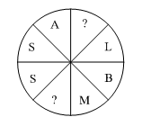
Solve: উক্তস্থান দ্বয়ে EY বসালে যথার্থ হয়। সেক্ষেত্রে উত্তর হবে ASSEMBLY. [LLM] ছবিনির্ভর প্রশ্ন; kgc.ac.bd কী অনুযায়ী উত্তর ‘T, X’ (অপশন A)। উৎস-নোটের EY→ASSEMBLY ব্যাখ্যা অপশনের সঙ্গে মেলে না; kgc-এর স্পষ্ট উত্তর থাকায় A বসানো হয়েছে—মূল ছবির সঙ্গে মিলিয়ে দেখা উচিত।
correct_answer: A
Recently fixed (for context)
Q6 • Bangla Language & Literature fixed
‘বাংলা সাহিত্যের জনক’ হিসেবে কার নাম চির স্মরণীয়?
A. মাইকেল মধুসূদন দত্ত
B. রাজা রামমোহন রায়
C. ঈশ্বরচন্দ্র বিদ্যাসাগর
D. বঙ্কিমচন্দ্র চট্টোপাধ্যায়
Solve: বাংলা সাহিত্যের জনক বলে কেউ নেই। ‘বাংলা গদ্যের জনক’ ঈশ্বরচন্দ্র বিদ্যাসাগর। বাংলা উপন্যাসের জনক বঙ্কিমচন্দ্র চট্টোপাধ্যায়। মাইকেল মধুসূদন দত্ত আধুনিক বাংলা কবিতার জনক। রাজা রামমোহন রায় ব্রাহ্ম সমাজের প্রতিষ্ঠাতা। [LLM] kgc.ac.bd ও eduaidbd—উভয় কী-তেই গৃহীত উত্তর ঈশ্বরচন্দ্র বিদ্যাসাগর (অপশন C); কঠোর অর্থে তিনি ‘বাংলা গদ্যের জনক’ হলেও পরীক্ষার প্রত্যাশিত উত্তর এটিই।
Q57 • International Affairs fixed
এশিয়ার হিন্দু রাষ্ট্র কোনটি?
A. নেপাল
B. ভারত
C. ভূটান
D. মালদ্বীপ
Solve: নেপালকে সাংবিধানিকভাবে হিন্দু রাষ্ট্র ঘোষণা করা হয় ১৯৬২ সালের সংবিধানের মাধ্যমে। তৎকালীন রাজা মহেন্দ্র সংবিধানে এটি যুক্ত করেন। ২০০৬ সালের ১৮ মে তৎকালীন আইনসভা ‘সংসদ’ (ইংরেজিতে Parliament) এর নিম্নকক্ষ প্রতিনিধি সভায় (ইংরেজিতে House of Representatives) আইন পাসের মাধ্যমে নেপালকে ধর্মনিরপেক্ষ রাষ্ট্রে পরিণত করেন। [LLM] বিতর্কিত প্রশ্ন: kgc.ac.bd কী-তে ‘ভারত’, bdmcq-এর মতে ‘কোনটি নয়’ (২০০৬-এর পর নেপাল ধর্মনিরপেক্ষ); তবে eduaidbd, sattacademy ও bcstarget-সহ অধিকাংশ সূত্র এবং পরীক্ষাকালীন প্রচলিত উত্তর নেপাল (অপশন A)—১৯৬২ সালের সংবিধানে নেপাল হিন্দু রাষ্ট্র ঘোষিত হয়।
Q65 • General Science fixed
ইনসুলিন নিঃসৃত হয় কোথা থেকে?
A. অগ্ন্যাশয় হতে
B. প্যানক্রিয়াস হতে
C. লিভার হতে
D. পিটুইটারী গ্লান্ড হতে
Solve: প্যানক্রিয়াস (Pancreas)-এর বাংলা প্রতিশব্দ অগ্ন্যাশয়। মানবদেহের অগ্ন্যাশয় বা প্যানক্রিয়াস নামক গ্রন্হির ‘আইলেটস্ অব ল্যাঙ্গারহ্যান্স’ নামক অংশ হতে রক্তে শর্করার পরিমাণ নিয়ন্ত্রণকারী হরমোন ‘ইনসুলিন’ নিঃসৃত হয়। [LLM] অপশন A (অগ্ন্যাশয়) ও B (প্যানক্রিয়াস) প্রায় সমার্থক; kgc.ac.bd কী অনুযায়ী গৃহীত উত্তর ‘অগ্ন্যাশয় হতে’ (A)।
35th BCS — 2015-03-06 / চামেলি (200 Qs, manual 6, fixed 4)
Needs manual verification
Q1 • Bangla Language & Literature (বাংলা ভাষা ও সাহিত্য) question image image-only question
A. প্রথমটি অশুদ্ধ, দ্বিতীয়টি শুদ্ধ
B. প্রথমটি শুদ্ধ, দ্বিতীয়টি অশুদ্ধ
C. দুটোই অশুদ্ধ
D. দুটোই শুদ্ধ
Q image: images/35th_bcs/q1_img1.jpg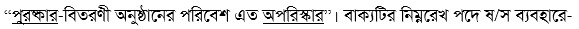
Solve: ‘পুরষ্কার’ ও ‘অপরিস্কার’ শব্দ দুটোর শুদ্ধরূপ যথাক্রমে ‘পুরস্কার’ ও ‘অপরিষ্কার’। সুতরাং প্রশ্নে প্রদত্ত দুটো শব্দই অশুদ্ধ।
correct_answer: C
Q161 • Mathematical Reasoning (গাণিতিক যুক্তি) solve image blank answer (defective) recently fixed
কলার দাম 20% কমে যাওয়ায় 12 টাকায় পূর্ব অপেক্ষা 2টি কলা বেশি পাওয়া গেলে বর্তমানে একটি কলার দাম কত টাকা?
A. 1.50
B. 2.50
C. 3.00
D. 4.00
Solve image: images/35th_bcs/q161_img1.png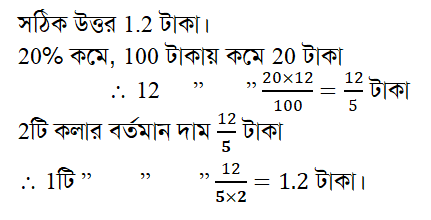
Solve: সঠিক উত্তর ১.২০ টাকা, যা অপশনে নেই (defective)। গণিত: দাম ২০% কমায় ১২ টাকায় ২০% অতিরিক্ত টাকায় ২টি কলা বেশি পাওয়া যায়; ১২ টাকার ২০% = ২.৪০ টাকা = ২টি কলার বর্তমান দাম, সুতরাং ১টি কলার বর্তমান দাম ১.২০ টাকা। অপশন A-এর ১.৫০ টাকা হলো দাম কমার আগের মূল্য, প্রশ্নে বর্তমান দাম চাওয়া হয়েছে। [বিদ্যাবাড়ি: অপশনে সঠিক উত্তর নেই]
correct_answer:
Q178 • Mental Ability (মানসিক দক্ষতা) question image solve image image-only question
Q image: images/35th_bcs/q178_img1.png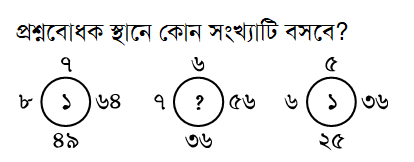
Solve image: images/35th_bcs/q178_img2.png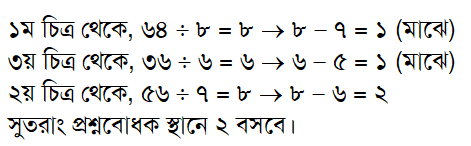
Solve is image-only (see solve image above)
correct_answer: C
Q179 • Mental Ability (মানসিক দক্ষতা) question image image-only question
Q image: images/35th_bcs/q179_img1.png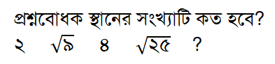
Solve: ২→২ √৯→৩ ৪→৪ √২৫→৫ ৬→৬
correct_answer: A
Q183 • Mental Ability (মানসিক দক্ষতা) question image image-only question
A. TENSION
B. RELATION
C. NATIONAL
D. RELATIVE
Q image: images/35th_bcs/q183_img1.png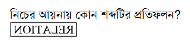
Solve: আয়নায় যেকোনো শব্দকে উল্টো দেখায় বলে প্রদত্ত শব্দটি ‘RELATION’ শব্দটির উল্টো হিসেবে দৃশ্যমান হচ্ছে। সুতরাং উত্তর হবে (খ)।
correct_answer: B
Q185 • Mental Ability (মানসিক দক্ষতা) question image solve image image-only question
A. ৬টি
B. ৭টি
C. ৮টি
D. ১০টি
Q image: images/35th_bcs/q185_img1.png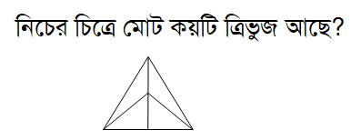
Solve image: images/35th_bcs/q185_img2.png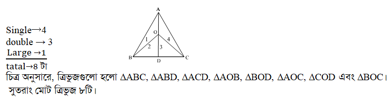
Solve is image-only (see solve image above)
correct_answer: C
Recently fixed (for context)
Q10 • Bangla Language & Literature fixed
‘লবণ’ শব্দের বিশেষণ কোনটি?
A. নোনতা
B. লবণাক্ত
C. লাবণ্য
D. ললিত
Solve: ‘লবণ’ বিশেষ্য পদ। এর বিশেষণ পদ হলো ‘লবণাক্ত’। ‘নোনতা’-ও গুণবাচক শব্দ হলেও প্রমিত বিশেষণ রূপ ‘লবণাক্ত’। ‘লাবণ্য’ বিশেষ্য (সৌন্দর্য)। [প্রশ্নটি মূল পরীক্ষায় 'বিশেষণ' ছিল; সোর্স HTML-এ 'বিশেষ্য' টাইপো ছিল]
Q23 • Bangla Language & Literature fixed
রবীন্দ্রনাথ ঠাকুরের পূর্বপুরুষের আদিবসতি কোথায় ছিল?
A. খুলনার দক্ষিণ ডিহি
B. যশোরের কেশবপুর
C. ছোটনাগপুর মালভূমি
D. কুষ্টিয়ার শিলাইদহ
Solve: বাংলাদেশ জাতীয় তথ্য বাতায়ন এর তথ্য অনুযায়ী বিশ্বকবি রবীন্দ্রনাথ ঠাকুরের পূর্বপুরুষের আদি নিবাস খুলনা জেলার রূপসা উপজেলার পিঠাভোগ গ্রামে। খুলনা আঞ্চলিক প্রত্নতাত্ত্বিক অধিদফতর এর পরীক্ষামূলক সমীক্ষায় পিঠাভোগ গ্রামে রবীন্দ্রনাথের পূর্বপুরুষের ভিটা ভিত্তিপ্রস্তরের সন্ধান পাওয়া গেছে।
Q74 • Bangladesh Affairs fixed
বাংলাদেশে বেসরকারি টিভি চ্যানেলের সংখ্যা-
Solve: পরীক্ষার সময়ে (২০১৫) অনুমোদিত বেসরকারি টিভি চ্যানেলের সংখ্যা ছিল ২৮টি। বর্তমানে (তথ্যমন্ত্রী ড. হাছান মাহমুদ, ১১ নভেম্বর ২০২০, জাতীয় সংসদ) লাইসেন্সপ্রাপ্ত বেসরকারি টিভি চ্যানেল ৪৫টি, যার মধ্যে ৩০টি পূর্ণ সম্প্রচারে রয়েছে; ১১টি সম্প্রচারের অপেক্ষায় এবং ৪টি ফ্রিকোয়েন্সি পায়নি।
Q78 • Bangladesh Affairs fixed
বাংলাদেশে ইউনিয়ন পরিষদের সংখ্যা কত?
A. ৪৫০০
B. ৪৫৫০
C. ৫৬০০
D. ৪৬০০
Solve: পরীক্ষার সময়ে (২০১৫) বাংলাদেশে ইউনিয়ন পরিষদের সংখ্যা ছিল ৪৫৫০টি। বর্তমানে জাতীয় তথ্য বাতায়ন ও আদমশুমারি ২০২২ অনুযায়ী ইউনিয়ন পরিষদের সংখ্যা ৪৫৭১টি।
36th BCS — 2016-01-08 / দোলনচাঁপা (200 Qs, manual 9, fixed 5)
Needs manual verification
Q113 • International Affairs (আন্তর্জাতিক বিষয়াবলি) blank answer (defective) recently fixed
বর্তমানে NAM-এর সদস্য সংখ্যা–
Solve: NAM-এর সদস্য সংখ্যা ১২০ (কেজিসি ৩৬তম বিসিএস উত্তরে গৃহীত উত্তর)। কিন্তু এখানে অপশনগুলো ৩৩/১৫/৭৭/২১ — ১২০ অপশনে নেই। প্রশ্নটি ত্রুটিপূর্ণ, ফাঁকা রাখা হয়েছে।
correct_answer:
Q120 • International Affairs (আন্তর্জাতিক বিষয়াবলি) blank answer (defective) recently fixed
মাদার তেরেসা কোন দেশে জন্মগ্রহণ করেন?
A. ভারত
B. আলজেরিয়া
C. আলবেনিয়া
D. ফ্রান্স
Solve: মাদার তেরেসা তৎকালীন যুগোস্লাভিয়ার (বর্তমান উত্তর মেসিডোনিয়া) স্কপিয়েতে জন্মগ্রহণ করেন। কেজিসি ৩৬তম বিসিএস উত্তরে গৃহীত উত্তর 'মেসিডোনিয়া' — কিন্তু এখানে অপশনগুলো ভারত/আলজেরিয়া/আলবেনিয়া/ফ্রান্স, 'মেসিডোনিয়া' নেই। প্রশ্নটি ত্রুটিপূর্ণ, ফাঁকা রাখা হয়েছে।
correct_answer:
Q174 • Mathematical Reasoning (গাণিতিক যুক্তি) question image solve image image-only question
A. 1
B. -1
C. a - 1
D. a + 1
Q image: images/36th_bcs/q174_img1.png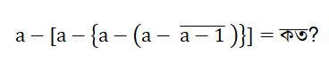
Solve image: images/36th_bcs/q174_img2.png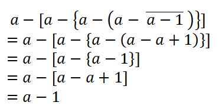
Solve is image-only (see solve image above)
correct_answer: C
Q177 • Mental Ability (মানসিক দক্ষতা) question image image-only question
A. L₁₀
B. L₁₅
C. K₁₅
D. K₈
Q image: images/36th_bcs/q177_img1.png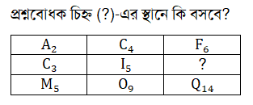
Solve: এখানে ইংরেজি বড় হাতের বর্ণগুলোকে এক অক্ষর পরপর সাজানো হয়েছে এবং প্রথম অক্ষর দুটির গাণিতিক অঙ্কগুলোর যোগফল হবে তৃতীয় অক্ষরটির গাণিতিক অঙ্ক। ∴ প্রশ্নবোধক স্থানে হবে K₈
correct_answer: D
Q178 • Mental Ability (মানসিক দক্ষতা) question image solve image image-only question
Q image: images/36th_bcs/q178_img1.jpg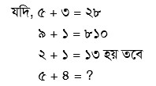
Solve image: images/36th_bcs/q178_img2.png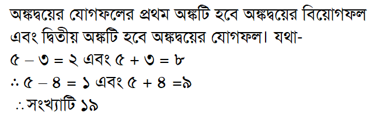
Solve is image-only (see solve image above)
correct_answer: B
Q182 • Mental Ability (মানসিক দক্ষতা) blank answer (defective) recently fixed
দুটি সমান্তরাল রেখা কটি বিন্দুতে ছেদ করে?
Solve: দুটি সমান্তরাল রেখা কখনও ছেদ করে না — ছেদবিন্দু ০টি। অপশনে ০ নেই (দেওয়া: ৪/২/৮/১৬)। প্রশ্নটি ত্রুটিপূর্ণ, ফাঁকা রাখা হয়েছে।
correct_answer:
Q183 • Mental Ability (মানসিক দক্ষতা) question image empty option(s) image-only question
A. empty
B. empty
C. empty
D. empty
Q image: images/36th_bcs/q183_img1.jpg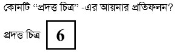
No solve note
correct_answer: B
Q184 • Mental Ability (মানসিক দক্ষতা) question image solve image image-only question
A. ৪ কেজি
B. ৬ কেজি
C. ৮ কেজি
D. ১০ কেজি
Q image: images/36th_bcs/q184_img1.png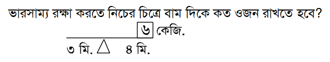
Solve image: images/36th_bcs/q184_img2.png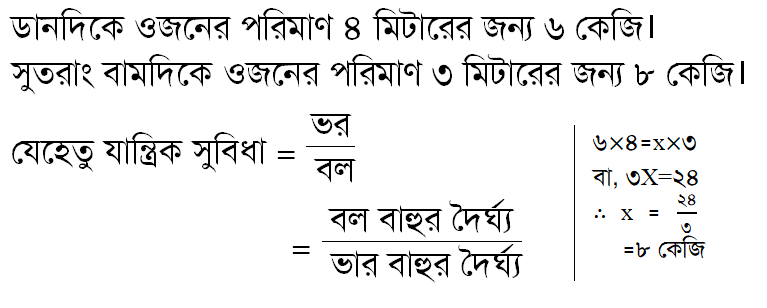
Solve is image-only (see solve image above)
correct_answer: C
Q190 • Mental Ability (মানসিক দক্ষতা) question image solve image image-only question
Q image: images/36th_bcs/q190_img1.png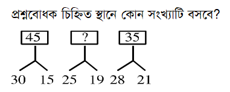
Solve image: images/36th_bcs/q190_img2.png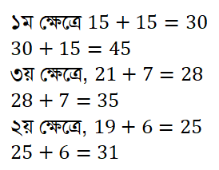
Solve is image-only (see solve image above)
correct_answer: C
Recently fixed (for context)
Q36 • English Language & Literature fixed
Professor Razzak was a scholar ____ refute. (Fill in the gap)
A. in
B. of
C. after
D. by
Solve: উৎসের প্রশ্নে 'refute' লেখা থাকলেও মূল প্রশ্ন ছিল 'scholar of repute' (খ্যাতিসম্পন্ন পণ্ডিত)। শূন্যস্থানে 'of' বসে — 'a scholar of repute' (কেজিসি ৩৬তম বিসিএস উত্তরে গৃহীত উত্তর: of)।
Q90 • Bangladesh Affairs fixed
বাংলাভাষাকে পাকিস্তান গণপরিষদ কোন তারিখে অন্যতম রাষ্ট্রভাষা হিসেবে স্বীকৃতি দেয়?
A. ৯ মে, ১৯৫৪
B. ২২ ফেব্রুয়ারি, ১৯৫৩
C. ১৬ ফেব্রুয়ারি, ১৯৫৬
D. ২১ ফেব্রুয়ারি, ১৯৫২
Solve: পাকিস্তান গণপরিষদ ৯ মে ১৯৫৪ বাংলাকে অন্যতম রাষ্ট্রভাষা হিসেবে স্বীকৃতি দেয় (ক)। (কেজিসি ৩৬তম বিসিএস উত্তরে গৃহীত উত্তর।)
Q93 • Bangladesh Affairs fixed
বাংলাদেশের বৃহত্তম জেলা কতটি?
A. ১৭টি
B. ২০টি
C. ৬৪টি
D. ১৯টি
Solve: ৩৬তম বিসিএস উত্তরে 'বাংলাদেশের বৃহত্তম জেলা' প্রশ্নের গৃহীত উত্তর ১৯টি (ঘ)। (কেজিসি ৩৬তম বিসিএস সমাধান।)
Q147 • Computer & Information Technology fixed
নিচের কোনটি 3G Language নয়?
A. C
B. Java
C. Assembly Language
D. Machine Language
Solve: 3G (তৃতীয় প্রজন্ম) ভাষা হলো উচ্চ-স্তরের ভাষা (C, Java ইত্যাদি)। Assembly Language 2G এবং Machine Language 1G — দুটিই নিম্ন-স্তরের। কেজিসি ৩৬তম বিসিএস উত্তরে গৃহীত উত্তর Assembly Language (গ)।
Q186 • Mental Ability fixed
সঠিক বানান কোনটি?
A. কুসংস্কার
B. কুসংকার
C. কুসংষ্কার
D. কূশংষ্কার
Solve: সঠিক বানান কুসংস্কার।
37th BCS — 2016-09-30 / চিত্রা (200 Qs, manual 2, fixed 5)
Needs manual verification
Q173 • Mathematical Reasoning (গাণিতিক যুক্তি) question image solve image image-only question
A. 1, 2, 3, 4
B. 2, 3, 4
C. 2, 3, 4, 5
D. Φ
Q image: images/37th_bcs/q173_img1.png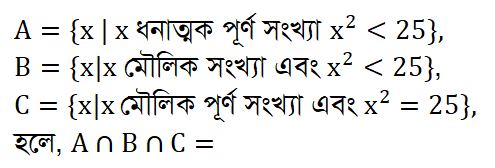
Solve image: images/37th_bcs/q173_img2.png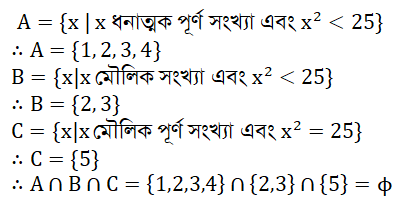
Solve is image-only (see solve image above)
correct_answer: D
Q186 • Mental Ability (মানসিক দক্ষতা) question image solve image image-only question
Q image: images/37th_bcs/q186_img1.png
Solve image: images/37th_bcs/q186_img2.png
Solve is image-only (see solve image above)
correct_answer: A
Recently fixed (for context)
Q42 • English Language & Literature fixed
"Who planted this tree here"? The correct passive voice of this sentence is–
A. By whom the tree was planted here?
B. Who the tree had been planted hereby?
C. The tree was planted here by whom
D. By whom had the tree been planted here?
Solve: Who দিয়ে interrogative sentence শুরু হলে passive করার ক্ষেত্রে বাক্যের শুরুতে by whom বসে। মূল passive form টি হবে: By whom was this tree planted here? format হবে-By whom + auxiliary verb + subject+v এর past participle +বাকি অংশ (যদি থাকে)।
Q43 • English Language & Literature fixed
Fraility the name is women. Here ‘Fraility’ is :
A. A noun
B. An adjective
C. An adverb
D. A verb
Solve: Fraility বলে কোনো word পাওয়া যায় না। তবে শব্দটি Fraility না হয়ে Frailty হলে এটি হতো Noun। যার অর্থ ভাঙ্গুরতা, নশ্বরতা।
Q79 • Bangladesh Affairs fixed
সরকারি হিসাব মতে বাংলাদেশিদের গড় আয়ু–
A. ৬৫.৪ বছর
B. ৬৭.৫ বছর
C. ৭০.৮ বছর
D. ৭৩.৭ বছর
Solve: অর্থনৈতিক সমীক্ষা ২০২২ অনুযায়ী, প্রত্যাশিত গড় আয়ুষ্কাল ৭২.৮ বছর (পুরুষ-৭১.২ ও মহিলা ৭৪.৫ বছর)।
Q98 • Bangladesh Affairs fixed
বাংলাদেশকে স্বীকৃতিদানকারী প্রথম অনারব মুসলিম দেশ কোনটি?
A. ইন্দোনেশিয়া
B. মালয়েশিয়া
C. মালদ্বীপ
D. পাকিস্তান
Solve: বাংলাদেশ কে স্বীকৃতি দানকারী প্রথম দেশ ভুটান, প্রথম ইউরোপের দেশ পূর্ব জার্মানি। প্রথম অনারব মুসলিম দেশ সেনেগাল, প্রথম আরব দেশ ইরাক।
Q119 • International Affairs fixed
BRICS এর সদর দপ্তর কোথায়?
A. সাংহাই
B. মস্কো
C. প্রিটোরিয়া
D. নয়াদিল্লী
Solve: BRICS হলো উদীয়মান জাতীয় অর্থনীতির পাঁচটি দেশের একটি জোটের নাম। এর সদস্য দেশ ব্রাজিল, রাশিয়া, ভারত, চীন ও দক্ষিণ আফ্রিকা। সংস্থাটি গঠিত হয় ২০০৮ সালে। এর কোনো সদর দপ্তর নেই। তবে এ সংস্থাটির উদ্যোগে ২০১৪ সালে NDB (New Development Bank) নামে একটি ব্যাংক গঠিত হয়, যার সদর দপ্তর চীনের সাংহাই শহরে।
38th BCS — 2017-12-29 / সুরমা (200 Qs, manual 8, fixed 2)
Needs manual verification
Q6 • Bangla Language & Literature (বাংলা ভাষা ও সাহিত্য) blank answer (defective) recently fixed
কোনটি শুদ্ধ বানান?
A. স্বায়ত্ত্বশাসন
B. সায়ত্তশাসন
C. সায়ত্ত্বশাসন
D. স্বায়ত্বশাসন
Solve: প্রশ্নের চারটি অপশনই অশুদ্ধ — শুদ্ধ বানান 'স্বায়ত্তশাসন', যা অপশনে নেই (অপশনগুলো: স্বায়ত্ত্বশাসন/সায়ত্তশাসন/সায়ত্ত্বশাসন/স্বায়ত্বশাসন)। প্রশ্নটি ত্রুটিপূর্ণ, ফাঁকা রাখা হয়েছে।
correct_answer:
Q83 • Bangladesh Affairs (বাংলাদেশ বিষয়াবলি) blank answer (defective) recently fixed
বাংলাদেশ ইকোনমিক রিভিউ, ২০১৬ অনুসারে বাংলাদেশের শিশু মৃত্যুর হার (প্রতি হাজার জীবিত জন্মে)–
Solve: বাংলাদেশ ইকোনমিক রিভিউ ২০১৬ অনুযায়ী শিশু মৃত্যুর হার ছিল ৩০ (প্রতি হাজার জীবিত জন্মে) — যা অপশনে নেই (দেওয়া: ২৫/২৭/২৯/৩১)। কেজিসি ৩৮তম বিসিএস উত্তরে গৃহীত উত্তরও ৩০। প্রশ্নটি ত্রুটিপূর্ণ, ফাঁকা রাখা হয়েছে।
correct_answer:
Q175 • Mathematical Reasoning (গাণিতিক যুক্তি) question image solve image image-only question
A. 45°
B. 22.5°
C. 30°
D. 60°
Q image: images/38th_bcs/q175_img1.jpg
Solve image: images/38th_bcs/q175_img2.jpg
Solve is image-only (see solve image above)
correct_answer: C
Q181 • Mental Ability (মানসিক দক্ষতা) question image solve image image-only question
A. ১৬৪
B. ৯৭
C. ১৯১
D. ১৩৭
Q image: images/38th_bcs/q181_img1.jpg
Solve image: images/38th_bcs/q181_img2.jpg
Solve is image-only (see solve image above)
correct_answer: A
Q182 • Mental Ability (মানসিক দক্ষতা) empty option(s)
‘UNFARE’- এর আয়নায় দেখলে তার সঠিক রূপটি হবে-
A. empty
B. empty
C. empty
D. empty
Solve: আয়নায় দেখলে শব্দটি উল্টো (right-to-left) হয় এবং প্রতিটি অক্ষর অনুভূমিকভাবে প্রতিফলিত হয়। বড় হাতের A, H, I, M, O, T, U, V, W, X, Y অক্ষর আয়নায় অপরিবর্তিত থাকে; U→U, N→ᴎ (উল্টো), F→ᖶ (উল্টো), A→A, R→Я, E→Ǝ। 'UNFARE'→ 'ERA F N U' রূপে প্রতিফলিত হয়। উত্তর A। (অপশনের চিত্র থাকায় চূড়ান্ত যাচাই মানুষের জন্য বরাদ্দ।)
correct_answer: A
Q184 • Mental Ability (মানসিক দক্ষতা) question image solve image image-only question
Q image: images/38th_bcs/q184_img1.jpg
Solve image: images/38th_bcs/q184_img2.jpg
Solve is image-only (see solve image above)
correct_answer: D
Q186 • Mental Ability (মানসিক দক্ষতা) question image solve image image-only question
Q image: images/38th_bcs/q186_img1.jpg
Solve image: images/38th_bcs/q186_img2.jpg
Solve is image-only (see solve image above)
correct_answer: B
Q188 • Mental Ability (মানসিক দক্ষতা) question image solve image image-only question
A. ৬ : ১৫
B. ৮ : ৪০
C. ৭ : ২০
D. ৭ : ৪০
Q image: images/38th_bcs/q188_img1.jpg
Solve image: images/38th_bcs/q188_img2.jpg
Solve is image-only (see solve image above)
correct_answer: C
Recently fixed (for context)
Q151 • Computer & Information Technology fixed
কোন ধরনের bus ব্যবহৃত হয় না?
A. address bus
B. input-reader bus
C. dat bus
D. control bus
Solve: কম্পিউটারে ৩ ধরনের system bus ব্যবহৃত হয়: address bus, data bus ও control bus। 'input-reader bus' নামে কোনো বাস নেই (উৎসের নোটও তা নিশ্চিত করে)। অপশন (গ)-এর 'dat bus' হলো 'data bus'-এর টাইপো। তাই উত্তর (খ) input-reader bus।
Q152 • Computer & Information Technology fixed
ROM ভিত্তিক প্রোগ্রামের নাম কি?
A. malware
B. irmware
C. virus
D. lip-lop
Solve: ROM-ভিত্তিক প্রোগ্রামকে firmware বলে। এটি হার্ডওয়্যারে স্থায়ীভাবে ইনপুট দেওয়া হয় এবং পরিবর্তন/মোছা যায় না। অপশন (খ)-এ 'irmware' লেখা আছে যা 'firmware'-এর টাইপো।
39th BCS — 2018-08-03 / সুরমা (100 Qs, manual 3, fixed 2)
Needs manual verification
Q58 • Mathematical Reasoning (গাণিতিক যুক্তি) solve image blank answer (defective) recently fixed
c={x:x ঋণাত্মক পূর্ণসংখ্যা এবং x²<18; c সেটের উপাদানগুলো হবে-
A. {1, 2, 3, 5}
B. {1, 3, 5, 7}
C. {2, 4, 6, 8}
D. {1, 2, 3, 4}
Solve image: images/39th_bcs/q58_img1.jpg
Solve: প্রশ্নে ঋণাত্মক পূর্ণসংখ্যা চাওয়া হয়েছে (x<0, x²<18 → {-4,-3,-2,-1}), কিন্তু অপশনগুলো সবই ধনাত্মক। সঠিক উত্তর অপশনে নেই — প্রশ্নটি ত্রুটিপূর্ণ, ফাঁকা রাখা হয়েছে। (বিড়ালিয় ৩৯তম বিসিএস নোট: 'অপশনে সঠিক উত্তর নেই')
correct_answer:
Q76 • Mental Ability (মানসিক দক্ষতা) solve image blank answer (defective) recently fixed
ঘড়িতে যখন ৮টা বাজে তখন ঘণ্টার কাঁটা ও মিনিটের কাঁটার মধ্যবর্তী কোণ কত ডিগ্রি হবে?
A. ৯০°
B. ৯৫°
C. ১০৫°
D. ১১০°
Solve image: images/39th_bcs/q76_img1.png
Solve: ৮টায় ঘণ্টার ও মিনিটের কাঁটার মধ্যবর্তী কোণ = ৮×৩০° = ২৪০°, ছোট কোণ = ৩৬০°−২৪০° = ১২০°। ১২০° অপশনে নেই (দেওয়া: ৯০/৯৫/১০৫/১১০) — প্রশ্নটি ত্রুটিপূর্ণ, ফাঁকা রাখা হয়েছে।
correct_answer:
Q99 • Bangla Language & Literature (বাংলা ভাষা ও সাহিত্য) blank answer (defective) recently fixed
স্বাধীনতা পদক প্রাপ্ত ব্যক্তিত্ব হলেন-
A. সতীন সরকার
B. সৈয়দ আলী আহসান
C. সৈয়দ শামসুল হক
D. শামসুর রাহমান
Solve: যতীন সরকার (২০১০), সৈয়দ শামসুল হক (২০০০), শামসুর রাহমান (১৯৯১) ও সৈয়দ আলী আহসান (১৯৮৭) — চারজনই স্বাধীনতা পদক প্রাপ্ত। ফলে একাধিক সঠিক উত্তর; বিড়ালিয় নোট: 'অপশনে সঠিক উত্তর নেই'। প্রশ্নটি ত্রুটিপূর্ণ, ফাঁকা রাখা হয়েছে।
correct_answer:
Recently fixed (for context)
Q33 • Bangladesh Affairs fixed
বাংলাদেশের জিডিপিতে (GDP) কৃষি খাতের (ফসল, বন, প্রাণিসম্পদ, মৎস্যসহ) অবদান কত শতাংশ?
A. ১৪.৭৯ শতাংশ
B. ১৬ শতাংশ
C. ১২ শতাংশ
D. ১৮ শতাংশ
Solve: ৩৯তম বিসিএস (আগস্ট ২০১৮) উত্তরে বাংলাদেশের জিডিপিতে কৃষি খাতের অবদান ১৪.৭৯% (ক)। ২০১৭-১৮ অর্থবছরের হিসাব; পরবর্তীতে ২০১৯-২০ সালে ১৩.৩৫%-এ নেমে আসে। (উৎস: bdmcq/বিড়ালিয় বিসিএস সমাধান)
Q53 • International Affairs fixed
ন্যাটোর সর্বশেষ সদস্য রাষ্ট্র কোনটি?
A. মন্টিনিগ্রো
B. লিথুয়ানিয়া
C. আলবেনিয়া
D. ক্রোয়েশিয়া
Solve: পরীক্ষার সময় (আগস্ট ২০১৮) ন্যাটোর সর্বশেষ সদস্য ছিল মন্টিনিগ্রো (জুন ২০১৭-এ যোগ দেয়) (ক)। ফিনল্যান্ড (২০২৩) ও সুইডেন (২০২৪) পরে যোগ দিয়েছে — এই প্রশ্নের গৃহীত উত্তর মন্টিনিগ্রো।
40th BCS — 2019-05-03 / সুরমা (200 Qs, manual 6, fixed 6)
Needs manual verification
Q172 • Mathematical Reasoning (গাণিতিক যুক্তি) question image image-only question
A. 90°
B. 55°
C. 45°
D. 35°
Q image: images/40th_bcs/q172_img1.jpg
Solve: চিত্রে ∆ PQR একটি সমদ্বিবাহু ত্রিভুজ। এখন, ∆ PQR- এর যেহেতু PQ= PR, তাই ∠PQR=∠PRQ ∴∠PQR=∠PRQ=55° আবার, ∠LRN=∠NRQ=90° ∴∠NRP=90°-∠PRQ =90-55° =35°
correct_answer: D
Q180 • Mental Ability (মানসিক দক্ষতা) solve image empty option(s)
‘UNICEF’ এর আয়নায় প্রতিবিম্ব কোনটি হবে?
A. empty
B. empty
C. empty
D. empty
Solve image: images/40th_bcs/q180_img1.png
Solve: [html][txt]আয়নায় যেকোনো শব্দকে উল্টো দেখায় বলে UNICEF শব্দটির উল্টো রূপ হবে (খ)[html][/html]
correct_answer: B
Q184 • Mental Ability (মানসিক দক্ষতা) question image empty option(s) image-only question
A. empty
B. empty
C. empty
D. empty
Q image: images/40th_bcs/q184_img1.png
Solve: প্রথম বৃত্তে পরস্পর বিপরীত দিকে দুটি তীর চিহ্ন রয়েছে। যেখানে দ্বিতীয় ও তৃতীয় বৃত্তে পরস্পর বিপরীত দিকে একটি করে তীর চিহ্ন রযেছে। একইভাবে যেহেতু চতুর্থ চিত্রটির ত্রিভুজে পরস্পর বিপরীত দিকে দুটি ছোট বৃত্ত রয়েছে। তাই পঞ্চম চিত্রটিতে যে দিকে ছোট বৃত্ত রয়েছে ষষ্ঠ চিত্রটিতে তার বিপরীত দিকে ছোট বৃত্ত থাকবে। অর্থাৎ সঠিক উত্তর (ক) হবে।
correct_answer: A
Q185 • Mental Ability (মানসিক দক্ষতা) question image solve image empty option(s) image-only question
A. empty
B. empty
C. empty
D. empty
Q image: images/40th_bcs/q185_img1.png
Solve image: images/40th_bcs/q185_img2.jpg
Solve is image-only (see solve image above)
correct_answer: B
Q186 • Mental Ability (মানসিক দক্ষতা) question image solve image empty option(s) image-only question
A. empty
B. empty
C. empty
D. empty
Q image: images/40th_bcs/q186_img1.png
Solve image: images/40th_bcs/q186_img2.png
Solve image: images/40th_bcs/q186_img3.png
Solve: [html][txt]এখানে দেখা যাচ্ছে প্রশ্নটির প্রশ্নবোধক (?) চিহ্নিত স্থানে[/txt][txt]চিত্রটি বসলে, তা উপরের চিত্রের সাথে মিলে যাবে। তখন চিত্রটি দাঁড়াবে[/txt][/html]
correct_answer: D
Q188 • Mental Ability (মানসিক দক্ষতা) question image solve image image-only question
A. ১২০
B. ১৪০
C. ১৬০
D. ৮০
Q image: images/40th_bcs/q188_img1.jpg
Solve image: images/40th_bcs/q188_img2.jpg
Solve is image-only (see solve image above)
correct_answer: B
Recently fixed (for context)
Q33 • Bangla Language & Literature fixed
‘বিদ্রোহী’ কবিতাটি কোন সনে প্রথম প্রকাশিত হয়?
A. ১৯২৩ সন
B. ১৯২১ সন
C. ১৯১৯ সন
D. ১৯১৮ সন
Solve: 'বিদ্রোহী' ১৯২১ সালের ডিসেম্বরে রচিত এবং ১৯২২ সালের ৬ জানুয়ারি সাপ্তাহিক বিজলীতে ছাপা হয়; তবে প্রামাণ্য হিসেবে রফিকুল ইসলামের 'নজরুল নির্দেশিকা' মতে প্রথম প্রকাশ মোসলেম ভারত পত্রিকার কার্তিক ১৩২৮ (অক্টোবর-নভেম্বর ১৯২১) সংখ্যায়। ৪০তম বিসিএস উত্তর: ১৯২১ সন (খ)।
Q79 • Bangladesh Affairs fixed
বাংলাদেশে মোট আবাদযোগ্য জমির পরিমাণ-
A. ২ কোটি ৪০ লক্ষ একর
B. ২ কোটি ৫০ লক্ষ একর
C. ২ কোটি ২৫ লক্ষ একর
D. ২ কোটি ২১ লক্ষ একর
Solve: ৪০তম বিসিএস উত্তরে বাংলাদেশের মোট আবাদযোগ্য জমি = ২ কোটি ৪০ লক্ষ একর (ক)। সূত্রভেদে সংখ্যা ভিন্ন হয় (বিবিএস ২০১৯: ২ কোটি ১১ লক্ষ একর; সাম্প্রতিক তথ্যে ৮৮.২৯ লক্ষ হেক্টর ≈ ২ কোটি ১৮ লক্ষ একর), তবে এই প্রশ্নের গৃহীত উত্তর '২ কোটি ৪০ লক্ষ একর'।
Q81 • Bangladesh Affairs fixed
২০১৮ সালে বাংলাদেশের Per capita GDP (nominal) কত?
A. $ ১,৭৫০ মার্কিন ডলার
B. $ ১,৭৫১ মার্কিন ডলার
C. $ ১,৭৫২ মার্কিন ডলার
D. $ ১,৭৫৩ মার্কিন ডলার
Solve: ২০১৮ সালে বাংলাদেশের মাথাপিছু জিডিপি (nominal) ছিল ১,৭৫১ মার্কিন ডলার (খ)। (বিবিএস সূত্র।)
Q105 • International Affairs fixed
সর্বশেষ মিউনিখ নিরাপত্তা সম্মেলন কোন সালের কোন মাসে অনুষ্ঠিত হয়েছে?
A. সেপ্টেম্বর, ২০১৮
B. মার্চ, ২০১৯
C. ফেব্রুয়ারি, ২০১৯
D. ডিসেম্বর, ২০১৮
Solve: মিউনিখ নিরাপত্তা সম্মেলন প্রতি বছর ফেব্রুয়ারিতে জার্মানির মিউনিখে অনুষ্ঠিত হয়। পরীক্ষার (৩ মে ২০১৯) পূর্ববর্তী সর্বশেষ সম্মেলনটি ছিল ২০১৯ সালের ফেব্রুয়ারিতে (গ)।
Q161 • Mathematical Reasoning fixed
নিচের কোনটি অমূলদ সংখ্যা?
A. 0.4^(̇)
B. √9
C. 5.6^(̇)39^(̇)
D. √48
Solve:
Q183 • Mental Ability fixed
যদি চ × G = ৪২ হয় তবে J × ট =?
A. ১২০
B. ৯২
C. ১১৫
D. ১১০
Solve: চ × G = ৪২ হলে উত্তর হবে (ঘ) ১১০। চ × G = ৪২ [যেখানে চ বাংলা ব্যঞ্জনবর্ণের ৬ষ্ঠ এবং G ইংরেজী বর্ণমালার ৭ম বর্ণ। তাই, চ × G = ৬ × ৭ = ৪২] এখন, J × ট = ১০ × ১১ = ১১০।
41st BCS — 2021-03-19 / হাসনাহেনা (200 Qs, manual 3, fixed 0)
Needs manual verification
Q87 • Mental Ability (মানসিক দক্ষতা) question image solve image image-only question
Q image: images/41st_bcs/q87_img1.jpg
Solve image: images/41st_bcs/q87_img2.jpg
Solve is image-only (see solve image above)
correct_answer: B
Q88 • Mental Ability (মানসিক দক্ষতা) empty option(s)
‘RELATION’- এর আয়নায় প্রতিবিম্ব কোনটি হবে?
A. empty
B. empty
C. empty
D. empty
Solve: আয়নাতে Capital letter ‘A, H, I, M, O, T U, V, W, X, Y’ এবং Small letter এ ‘i, l, o, v, w, x’ এর কোন পরিবর্তন হয় না তাই উত্তর হবে ক।
correct_answer: A
Q171 • Bangladesh Affairs (বাংলাদেশ বিষয়াবলি) blank answer (defective) recently fixed
বঙ্গবন্ধুকে কখন ‘জুলিও কুরী’ শান্তি পুরস্কার প্রদান করা হয়?
A. ২০ মে, ১৯৭২
B. ২১ মে, ১৯৭২
C. ২২ মে, ১৯৭২
D. ২৩ মে, ১৯৭২
Solve: ১৯৭২ সালের ১০ অক্টোবর বিশ্বশান্তি পরিষদ বঙ্গবন্ধুকে ‘জুলিও কুরী’ পুরস্কার প্রাপ্তির নাম ঘোষণা করা হয়। প্রদত্ত প্রশ্নের অপশনগুলোর সাল ভুল দেওয়া আছে। পরবর্তীতে ১৯৭৩ সালের ২৩ মে বিশ্ব শান্তি পরিষদ কর্তৃক বঙ্গবন্ধুকে ‘জুলিও কুরি’ শান্তি পদকে ভূষিত করা হয়। বিশ্ববিখ্যাত বিজ্ঞানী ম্যারি কুরি ও পিয়েরে কুরি দম্পতি বিশ্ব শান্তির সংগ্রামে যে অবদান রেখেছেন, তা স্মরণীয় করে রাখতে বিশ্ব শান্তি পরিষদ ১৯৫০ সাল থেকে ফ্যাসিবাদবিরোধী, সাম্রাজ্যবাদবিরোধী সংগ্রামে, মানবতার কল্যাণে, শান্তির স্বপক্ষে বিশেষ অবদানের জন্য বরণীয় ব্যক্তি ও সংগঠনকে ‘জুলিও কুরি’ শান্তি পদকে ভূষিত করে আসছে।
correct_answer:
42nd BCS — 2021-02-26 / সুরমা (100 Qs, manual 1, fixed 0)
Needs manual verification
Q85 • Mental Ability (মানসিক দক্ষতা) question image empty option(s) image-only question
A. empty
B. empty
C. empty
D. empty
Q image: images/42nd_bcs/q85_img1.jpg
No solve note
correct_answer: B
43rd BCS — 2021-10-29 / নীলকণ্ঠ (200 Qs, manual 5, fixed 1)
Needs manual verification
Q65 • Mathematical Reasoning (গাণিতিক যুক্তি) question image image-only question
A. {3, 5, 8}
B. {4, 5, 7}
C. {3, 4, 5}
D. {3, 5, 7}
Q image: images/43rd_bcs/q65_img1.jpg
Solve: A ও B সেটকে তালিকা পদ্ধতিতে প্রকাশ করে পাই, A = 3,4,5,6,7,8, B = 1,3,5,7,9, A∩B = 3,5,7
correct_answer: D
Q76 • Mental Ability (মানসিক দক্ষতা) question image solve image empty option(s) image-only question
A. empty
B. empty
C. empty
D. empty
Q image: images/43rd_bcs/q76_img1.jpg
Solve image: images/43rd_bcs/q76_img2.jpg
Solve is image-only (see solve image above)
correct_answer: A
Q79 • Mental Ability (মানসিক দক্ষতা) question image solve image image-only question
A. 30 পাউন্ড
B. 25 পাউন্ড
C. 40 পাউন্ড
D. 35 পাউন্ড
Q image: images/43rd_bcs/q79_img1.png
Solve image: images/43rd_bcs/q79_img2.jpg
Solve is image-only (see solve image above)
correct_answer: D
Q85 • Mental Ability (মানসিক দক্ষতা) question image solve image image-only question
Q image: images/43rd_bcs/q85_img1.jpg
Solve image: images/43rd_bcs/q85_img2.jpg
Solve is image-only (see solve image above)
correct_answer: B
Q90 • Mental Ability (মানসিক দক্ষতা) question image empty option(s) image-only question
A. empty
B. empty
C. empty
D. empty
Q image: images/43rd_bcs/q90_img1.png
Solve: ১ম ও ২য় চিত্রে V ও W এসেছে ৩য় চিত্রে উল্টো V তাই পরের চিত্রে উল্টো W হবে।
correct_answer: A
Recently fixed (for context)
Q68 • Mathematical Reasoning fixed
1/4−1/6+1/9−2/27+… ধারাটির অসীম পদের সমষ্টি কত?
A. S∞=20/3
B. S∞=3/20
C. S∞=20
D. S∞=3
Solve:
44th BCS — 2022-05-27 / হেমন্ত (200 Qs, manual 6, fixed 1)
Needs manual verification
Q11 • International Affairs (আন্তর্জাতিক বিষয়াবলি) blank answer (defective) recently fixed
প্রথাগতভাবে বছরের কোন দিন জাতিসংঘ সাধারণ পরিষদের বার্ষিক অধিবেশন শুরু হয়?
A. সেপ্টেম্বর মাসের প্রথম সোমবার
B. অক্টোবর মাসের প্রথম মঙ্গলবার
C. আগস্ট মাসের শেষ সোমবার
D. অক্টোবর মাসের প্রথম সোমবার
Solve: জাতিসংঘের মূল কার্যক্রম পরিচালনা করে সাধারণ পরিষদ। এর অপর নাম আলোচনা পরিষদ/নির্বাহী পরিষদ। জাতিসংঘ সনদের ২০নং অনুচ্ছেদ অনুসারে প্রতিবছর সেপ্টেম্বর মাসের তৃতীয় মঙ্গলবার প্রথাগতভাবে জাতিসংঘের সাধারণ পরিষদের বার্ষিক অধিবেশন শুরু হয়। তবে ৪৪তম বিসিএস-এ প্রদত্ত অপশনগুলোর (প্রথম সোমবার/প্রথম মঙ্গলবার/শেষ সোমবার) কোনোটি সঠিক নয় — সঠিক উত্তর 'সেপ্টেম্বর মাসের তৃতীয় মঙ্গলবার' অপশনে অনুপস্থিত, তাই প্রশ্নটি ত্রুটিপূর্ণ (বিদ্যাবাড়ি সমাধানেও নোট করা হয়েছে)।
correct_answer:
Q186 • Mental Ability (মানসিক দক্ষতা) question image image-only question
Q image: images/44th_bcs/q186_img1.jpg
Solve: ১ম চিত্রে ত্রিভুজটি ২য় চিত্রে দাগাঙ্কিত ত্রিভুজ এবং ৩য় চিত্রের চতুর্ভুজটি ৪র্থ চিত্রে দাগাঙ্কিত চতুর্ভুজ হবে।
correct_answer: B
Q190 • Mental Ability (মানসিক দক্ষতা) question image solve image image-only question
A. ১০টি
B. ১২টি
C. ১৪টি
D. ১৬টি
Q image: images/44th_bcs/q190_img1.jpg
Solve image: images/44th_bcs/q190_img2.jpg
Solve is image-only (see solve image above)
correct_answer: D
Q191 • Mental Ability (মানসিক দক্ষতা) question image solve image image-only question
A. ৪ কেজি
B. ৬ কেজি
C. ৮ কেজি
D. ১০ কেজি
Q image: images/44th_bcs/q191_img1.jpg
Solve image: images/44th_bcs/q191_img2.jpg
Solve is image-only (see solve image above)
correct_answer: B
Q194 • Mental Ability (মানসিক দক্ষতা) solve image empty option(s)
‘MEMORY’ শব্দটির আয়নার প্রতিবিম্ব কোনটি?
A. empty
B. empty
C. empty
D. empty
Solve image: images/44th_bcs/q194_img1.jpg
Solve is image-only (see solve image above)
correct_answer: B
Q195 • Mental Ability (মানসিক দক্ষতা) question image solve image image-only question
Q image: images/44th_bcs/q195_img1.jpg
Solve image: images/44th_bcs/q195_img2.jpg
Solve is image-only (see solve image above)
correct_answer: C
Recently fixed (for context)
Q156 • Bangladesh Affairs fixed
বাংলাদেশের ক্ষুদ্র নৃগোষ্ঠীর সংখ্যা-
Solve: ৪৪তম বিসিএস-এর উত্তরমালা অনুযায়ী সঠিক উত্তর ৪৮টি। পরবর্তীতে ষষ্ঠ জনশুমারি ও গৃহ গণনা-২০২২-এর চূড়ান্ত রিপোর্ট ও সংস্কৃতি বিষয়ক মন্ত্রণালয়-২০১৯ অনুযায়ী সংখ্যাটি ৫০টি উল্লেখ করা হয়, তবে পরীক্ষার সময় (মে ২০২২) কার্যকর গেজেট অনুযায়ী ৪৮টি ছিল। (সূত্র: bissoy ৪৪তম বিসিএস উত্তর)
45th BCS — 2023-05-19 / মনপুরা (200 Qs, manual 4, fixed 2)
Needs manual verification
Q121 • Mental Ability (মানসিক দক্ষতা) empty option(s)
কোনটি ভারসাম্যপূর্ণ অবস্থা?
A. empty
B. empty
C. empty
D. empty
Solve: তিনটি ভেক্টরের ভারসাম্যপূর্ণ হওয়া মানে, তাদের যোগফল শূন্য। সেক্ষেত্রে, তীর চিহ্ন ধরে যেখানে শুরু সেখানেই ফেরা যাবে। ‘গ’ চিত্রে (–) অনুযায়ী তীর চিহ্ন ঘুরিয়ে দিলে এই শর্ত পূর্ণ হয়।
correct_answer: A
Q123 • Mental Ability (মানসিক দক্ষতা) question image image-only question
Q image: images/45th_bcs/q123_img1.jpg
Solve: একমাত্র ৪ নাম্বার চিত্র ছাড়া বাকীগুলোর বাহু পরস্পরের সাথে সংযুক্ত।
correct_answer: D
Q126 • Mental Ability (মানসিক দক্ষতা) solve image empty option(s)
ROSE এর আয়নায় প্রতিবিম্ব কোনটি হবে?
A. empty
B. empty
C. empty
D. কোনোটিই নয়
Solve image: images/45th_bcs/q126_img1.jpg
Solve is image-only (see solve image above)
correct_answer: C
Q127 • Mental Ability (মানসিক দক্ষতা) question image solve image empty option(s) image-only question
A. empty
B. empty
C. empty
D. empty
Q image: images/45th_bcs/q127_img1.jpg
Solve image: images/45th_bcs/q127_img2.jpg
Solve is image-only (see solve image above)
correct_answer: B
Recently fixed (for context)
Q186 • Bangladesh Affairs fixed
দেশের কোন জেলায় সর্ববৃহৎ সৌরবিদ্যুৎ কেন্দ্র অবস্থিত?
A. চট্টগ্রাম
B. ফেনী
C. নরসিংদী
D. ময়মনসিংহ
Solve: পরীক্ষার সময় (মে ২০২৩) দেশের সর্ববৃহৎ সৌর বিদ্যুৎ কেন্দ্রটি ছিল ময়মনসিংহের সুতিয়াখালী সৌর বিদ্যুৎ কেন্দ্র। পরবর্তীতে ২০২৪ সালে গাইবান্ধার সুন্দরগঞ্জে তিস্তা সোলার লিমিটেড (২০০ মেগাওয়াট) চালু হলে সর্ববৃহৎ কেন্দ্রটি গাইবান্ধায় স্থানান্তরিত হয়; তবে বিকল্পগুলোর মধ্যে প্রদত্ত সময়ের সঠিক উত্তর ময়মনসিংহ।
Q197 • Bangladesh Affairs fixed
বাংলাদেশের ভৌগলিক নির্দেশক পণ্য কয়টি?
A. ৯ (নয়) টি
B. ১০ (দশ) টি
C. ১১ (এগার) টি
D. ১২ (বার) টি
Solve: ৪৫তম বিসিএস পরীক্ষার সময় (মে ২০২৩) বাংলাদেশের ভৌগলিক নির্দেশক (GI) পণ্য ছিল ১১টি; ১১তম পণ্য ছিল রাজশাহীর ফজলি আম (২০২২)। এরপর ২০২৩ সালের ৫ জুলাই আরও ৪টি পণ্য (বগুড়ার দই, শেরপুরের তুলসীমালা ধান, চাঁপাইনবাবগঞ্জের ল্যাংড়া ও আশ্বিনা আম) স্বীকৃতি পেলে সংখ্যা ১৫ হয়।
46th BCS — 2024-04-26 / কপোতাক্ষ (200 Qs, manual 9, fixed 2)
Needs manual verification
Q9 • Mathematical Reasoning (গাণিতিক যুক্তি) solve image blank answer (defective)
১ হতে বড় ১০০০ এর মধ্যে কতগুলো সংখ্যা আছে যারা ১৬ দ্বারা বিভাজ্য নয় কিন্তু ৩০ দ্বারা বিভাজ্য?
Solve image: images/46th_bcs/q9_img1.jpg
Solve is image-only (see solve image above)
correct_answer:
Q17 • Mental Ability (মানসিক দক্ষতা) question image solve image image-only question
A. ৪৩৫২১
B. ৩৫৪২১
C. ৩৪৫১২
D. ৪৩৫১২
Q image: images/46th_bcs/q17_img1.jpg
Solve image: images/46th_bcs/q17_img2.jpg
Solve: প্রশ্নে প্রদত্ত প্রতিটি শব্দের শুরুতেই P আছে। সুতরাং দ্বিতীয় বর্ণের তুলনা করলে অভিধানের ক্রম অনুসারে সাজানো যাবে। প্রতিটি শব্দের দ্বিতীয় বর্ণ তুলনা করলে প্রথমে আসবে Pastel কারণ এর দ্বিতীয় বর্ণ ‘a’ অভিধানে সর্বপ্রথম আসবে। পরবর্তীতে আসবে ‘pebble’ যেখানে দ্বিতীয় বর্ণ ‘e’ এবং এর পরবর্তীতে আসবে ‘postal’ যার দ্বিতীয় বর্ণ ‘o’। এখন বাকি দুটি শব্দ ‘protect’ ও ‘pragmatic’ এর দ্বিতীয় বর্ণ হিসেবে প্রতিটিতেই ‘r’ থাকায় তৃতীয় বর্ণের তুলনা করতে হবে, যেখানে তৃতীয় বর্ণ হিসেবে আছে যথাক্রমে ‘o’ এবং ‘a’। ‘o’ এবং ‘a’ এর মধ্যে অভিধানে প্রথমে ‘a’ থাকায় progmatic আগে এবং protect সর্বশেষ বসবে। সুতরাং শব্দ ক্রম হবে,
correct_answer: B
Q22 • Mental Ability (মানসিক দক্ষতা) empty option(s)
যদি একটি কামান থেকে নিম্নলিখিত ৪টি বস্তুকে অনুভূমিক ভাবে নিক্ষেপ করা হয়, তবে কোনটি সবচেয়ে বেশি দূরে উড়ে যাবে?
A. empty
B. empty
C. empty
D. empty
Solve: নিম্নলিখিত ৪টি বস্তুকে অনুভূমিকভাবে নিক্ষেপ করা হলে গোলাকৃতি বস্তুটি সবচেয়ে বেশি দূরে উড়ে যাবে কারণ গোলাকৃতি বস্তুর আয়তন কম হওয়ায় এর বিরুদ্ধে বাতাসের বাঁধা কম থাকবে অন্য তিনটি বস্তুর তুলনায়।
correct_answer: C
Q25 • Mental Ability (মানসিক দক্ষতা) question image solve image empty option(s) image-only question
A. empty
B. empty
C. empty
D. empty
Q image: images/46th_bcs/q25_img1.jpg
Solve image: images/46th_bcs/q25_img2.jpg
Solve is image-only (see solve image above)
correct_answer: A
Q26 • Mental Ability (মানসিক দক্ষতা) question image solve image image-only question
A. ৮০
B. ১১৪
C. ১০৮
D. কোনোটিই নয়
Q image: images/46th_bcs/q26_img1.jpg
Solve image: images/46th_bcs/q26_img2.jpg
Solve is image-only (see solve image above)
correct_answer: C
Q28 • Mental Ability (মানসিক দক্ষতা) solve image blank answer (defective)
একটি কমিটিতে পুরুষ এবং মহিলার সংখ্যা একটি অনুপাতে ৩ : ২ হলে এবং মহিলা সংখ্যা ২৫ জন হলে- পুরুষের সংখ্যা কত?
Solve image: images/46th_bcs/q28_img1.jpg
Solve is image-only (see solve image above)
correct_answer:
Q30 • Mental Ability (মানসিক দক্ষতা) solve image blank answer (defective)
পাঁচটি ধারাবাহিক পূর্ণসংখ্যার গড় হলো ১৫ সবচেয়ে বড় পূর্ণ সংখ্যা কত?
Solve image: images/46th_bcs/q30_img1.jpg
Solve is image-only (see solve image above)
correct_answer:
Q92 • Bangla Language & Literature (বাংলা ভাষা ও সাহিত্য) empty option(s)
‘শূন্যপূরাণের’ রচয়িতা-
A. রামাই পন্ডিত
B. হলায়ূধ মিশ্র
C. কাহ্নপা
D. empty
Solve: ন্যপুরাণ বাংলা সাহিত্যের অন্ধকার যুগের সাহিত্য কর্ম। এর রচয়িতা রামাই পন্ডিত। এটি সদ্য পদ্য মিশ্রিত চম্পুকাব্য।
correct_answer: A
Q145 • International Affairs (আন্তর্জাতিক বিষয়াবলি) blank answer (defective)
উন্নয়নশীল দেশসমূহের বৈশ্বিক জোট ‘জি৭৭’ এর বর্তমান সদস্য সংখ্যা কত?
A. ১০৫
B. ১১৫
C. ১২৫
D. ১৩৫
Solve: Group 77 বা জি-৭৭ এর বর্তমান সদস্য ১৩৪টি। সর্বশেষ সদস্য দক্ষিণ সুদান। এটি ১৯৬৪ সালে প্রতিষ্ঠিত হয়।
correct_answer:
Recently fixed (for context)
Q45 • English Language & Literature fixed
Fill in the blank with the correct word. ______ he lay on the ground groaning
A. Injured
B. Injuring
C. having injured
D. Be injured
Solve: সঠিক উত্তর Injured (ক)। 'Injured, he lay on the ground groaning.' — reduced adverbial clause: 'As he was injured, he lay on the ground groaning.' এখানে 'Being' উহ্য রেখে past participle 'Injured' ব্যবহৃত হয়েছে।
Q64 • English Language & Literature fixed
The antonym of ‘boisterous’ is --
A. noisy
B. quit
C. unruly
D. cheerful
Solve: boisterous অর্থ কোলাহলপূর্ণ/হৈচৈপূর্ণ; এর বিপরীত quiet (শান্ত)। প্রদত্ত অপশনের 'quit' শব্দটি 'quiet'-এর বানান ত্রুটি; উদ্দেশ্য অর্থ অনুযায়ী সঠিক উত্তর খ (quit = quiet)।
47th BCS — 2025-09-19 / রক্তকমল (200 Qs, manual 3, fixed 2)
Needs manual verification
Q110 • International Affairs (আন্তর্জাতিক বিষয়াবলি) blank answer (defective) recently fixed
ইরানের ফার্দো (Fordow) পারমাণবিক সমৃদ্ধকরণ কেন্দ্রটি কোন প্রদেশে অবস্থিত?
A. ইসফাহান
B. ইলাম
C. বুমেহর
D. আলবোজ
Solve: ইরানের ফার্দো (Fordow) পারমাণবিক সমৃদ্ধকরণ কেন্দ্রটি ‘কোম’ প্রদেশে অবস্থিত। এটি তেহেরানের উত্তরে ১৪০ কি.মি. দূরে অবস্থিত।
correct_answer:
Q146 • Computer & Information Technology (কম্পিউটার ও তথ্যপ্রযুক্তি) solve image blank answer (defective) recently fixed
একটি কম্পিউটারের প্রোসেসর ক্লক স্পিড ৪.০০ গিগা হার্জ হলে এর ক্লক মাইকেল টাইম কত?
A. ২.৫ ন্যানো সেকেন্ড (ns)
B. ২.৫ মাইক্রো সেকেন্ড (ms)
C. ৪(ms)
D. ৪(ns)
Solve image: images/47th_bcs/q146_img1.jpg
Solve is image-only (see solve image above)
correct_answer:
Q180 • Mental Ability (মানসিক দক্ষতা) solve image empty option(s)
পানিতে প্রদত্ত প্রতিচ্ছবিগুলোর সাথে কোনটি ইংরেজিতে একটি শব্দের সাথে সাদৃশ্যপূর্ণ?
A. empty
B. empty
C. empty
D. empty
Solve image: images/47th_bcs/q180_img1.jpg
Solve is image-only (see solve image above)
correct_answer: D
Recently fixed (for context)
Q27 • Bangla Language & Literature fixed
কোন কাব্যে আলাওল ব্যক্তিগত জীবনের কথা লিখেছেন?
A. পদ্মাবতী
B. হপ্তপয়কর
C. সিকান্দরনামা
D. তোহ্ফা
Solve: আলাওল তাঁর 'তোহ্ফা' কাব্যের শেষাংশে নিজের ব্যক্তিগত জীবনের কথা, বংশ পরিচয় এবং সমসাময়িক নানা প্রতিকূল পরিস্থিতি (যুদ্ধবন্দি হওয়া, আরাকান রাজসভায় আশ্রয় লাভের অভিজ্ঞতা) বিস্তারিতভাবে বর্ণনা করেছেন। যদিও 'পদ্মাবতী'-সহ অন্যান্য কাব্যেও নিজের জীবনের কিছু ইঙ্গিত দিয়েছেন, তবে মূলত 'তোহ্ফা' কাব্যেই তাঁর ব্যক্তিগত জীবনের বিস্তারিত বিবরণ স্থান পেয়েছে। (সূত্র: sattacademy ৪৭তম বিসিএস উত্তরমালা)
Q139 • General Science fixed
ইথার সম্বন্ধে কোনটি মিথ্যা?
A. এটি একটি রাসায়নিক তরল পদার্থ
B. এটি একটি কাল্পনিক মাধ্যম যা মহাবিশ্বে সর্বত্র বিরাজমান ছিল
C. এ মাধ্যম ছাড়া তাড়িৎ চৌম্বক তরঙ্গ সঞ্চালন সম্ভব নয়
D. এ কাল্পনিক মাধ্যমটির স্থিতিস্থাপক ধর্ম ছিলো
Solve: আলোর তাড়িৎচৌম্বক তত্ত্ব আসার আগ পর্যন্ত মনে করা হতো কোনো তরঙ্গই মাধ্যম ছাড়া চলতে পারে না, তখন আলোক তরঙ্গ চলাচলের জন্য “ইথার” কে মাধ্যম হিসেবে বিবেচনা করা হতো।এই তত্ত্ব অনুযায়ী ইথার মাধ্যম ছিল স্থিতিস্থাপক, ওজনহীন, স্বচ্ছ এক আদর্শ মাধ্যম। পরবর্তীতে মাইকেলসন-মর্লি পরীক্ষার মাধ্যমে প্রমান করেন যে, বাস্তবে ইথার নামক কোন কিছুর অস্তিত্ব নেই এবং মাধ্যম ছাড়াও তাড়িৎচৌম্বক তরঙ্গ চলাচল করতে পারে। অন্যদিকে, ইথার হলো এক শ্রেণির জৈব যৌগ যেখানে একটি অক্সিজেন পরমাণু দুটি অ্যালকাইল বা অ্যারাইল গ্রুপের সাথে যুক্ত থাকে, এবং এদের সাধারণ সংকেত R-O-R′। ইথার সাধারণত তরল পদার্থ হওয়ায় জৈব দ্রাবক হিসেবে ব্যবহৃত হয় এবং
48th BCS — 2025-07-18 / ০২ (100 Qs, manual 0, fixed 1)
Recently fixed (for context)
Q19 • Bangla Language & Literature fixed
প্রত্যয়যোগে গঠিত শব্দ কোনটি?
A. ডাক্তারখানা
B. অনুগমন
C. দিলখোলা
D. সম্রাট
Solve: 'ডাক্তারখানা' শব্দটি 'ডাক্তার' শব্দের সাথে 'খানা' প্রত্যয়সদৃশ অংশ যুক্ত হয়ে গঠিত; 'অনুগমনে' উপসর্গ 'অনু', 'দিলখোলা' সমাসজাত। তাই সঠিক উত্তর ডাক্তারখানা।
49th BCS — 2025-10-10 / 3 (100 Qs, manual 0, fixed 3)
Recently fixed (for context)
Q18 • Mathematical Reasoning fixed
দুইটি সংখ্যার ল.সা.গু 4x³+12x²−16x−48 গ.সা.গু 2x+4। একটি সংখ্যা 4x²+20x+24 হলে অপরটি-
A. x²−4
B. 2(x²−4)
C. 4(x²−4)
D. x+2
Solve: আমরা জানি দুটি সংখ্যার গুণফল = ল.সা.গু × গ.সা.গু তাহলে, (4x²+20x+24)× অপর সংখ্যা =(4x²+12x²−16x−48)×(2x+4) ∴ অপর সংখ্যা =((16x²−16x−48)×(2x+4))/(4x²+20x+24) =(16(x²−x−3)×2(x+2))/(4(x²+5x+6))=(8×(x²−x−3)×(x+2))/((x+3)(x+2))=(8×(x²−x−3))/(x+3.)
Q48 • English Language & Literature fixed
Identify the correct passive form, “People thought that the despot was corrupt”
A. The despot had been thought to be corrupt
B. It was thought that the despot was corrupt
C. The despot was thought to be corrupt
D. The despot is thought to be corrupt
Solve: প্রদত্ত বাক্যটি হলো: “People thought that the despot was corrupt.” এই ধরনের বাক্যকে দু’ভাবে passive করা যায়: 1. ‘It’ দিয়ে বাক্যটি শুরু করা হয় (Impersonal Passive) এবং main clause এর subject (People) সরিয়ে দেওয়া হয়। Active Clause: People thought Passive Conversion: It was thought Final Passive Form: It was thought that the despot was corrupt. 2. এই পদ্ধতিতে নাউন ক্লজের subject কে (the despot) passive বাক্যের subject করা হয় এবং mail clause এর verb কে infinitive form এ (to + verb) লেখা হয়।
Q69 • International Affairs fixed
ভারত পাকিস্তানের মধ্যে ইন্দাস ওয়াটার ট্রিটি (IWT) কোন সালে স্বাক্ষরিত হয়?
A. ১৯৪৮
B. ১৯৭৪
C. ১৯৬৫
D. ১৯৬০
Solve: ভারত-পাকিস্তানের মধ্যে ইন্দাস ওয়াটার ট্রিটি (IWT) স্বাক্ষরিত ১৯ সেপ্টেম্বর, ১৯৬০ সালে করাচিতে। বিশ্বব্যাংক এর মধ্যস্থতায় ছিলো একে বাংলা ‘সিন্ধু পানি চুক্তি’ বলে। বি.দ্র: অপশনে ১৯৬০ নেই তাই সঠিক উত্তর দেয়া যাচ্ছে না।
Total cards: 224 • Generated via generate_manual_html.py • UTF-8